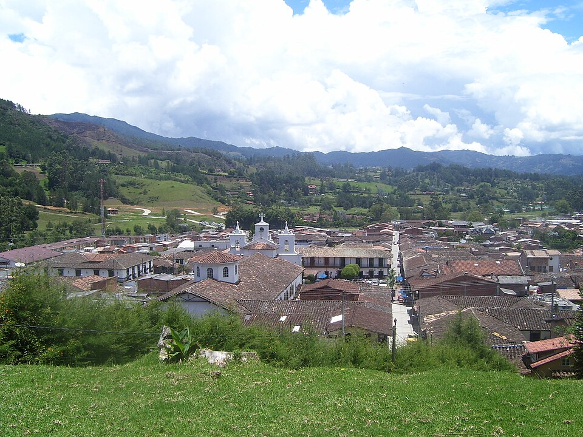
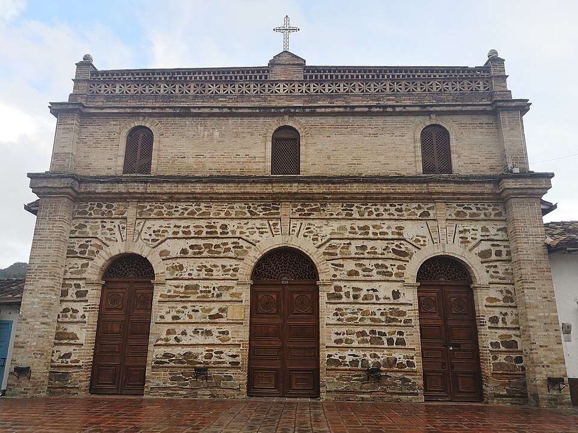
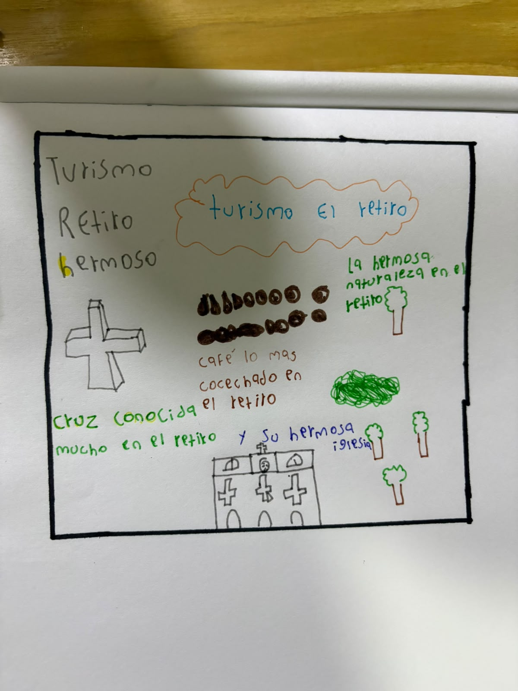

<!doctype html>
<html lang="es">
<head>
<meta charset="utf-8">
<meta name="viewport" content="width=device-width, initial-scale=1, viewport-fit=cover">
<meta name="description" content="Guía turística de El Retiro, Antioquia: lugares, rutas en bici, senderismo, comida, ebanistería, historia y la Fiesta de los Negritos.">
<meta name="theme-color" content="#21734A">
<link rel="manifest" href="manifest.webmanifest">
<link rel="icon" type="image/png" href="icons/icon-192.png">
<link rel="apple-touch-icon" href="icons/apple-touch-icon.png">
<meta name="apple-mobile-web-app-capable" content="yes">
<meta name="mobile-web-app-capable" content="yes">
<meta name="apple-mobile-web-app-title" content="El Retiro">
<title>Turismo El Retiro</title>
<link rel="preconnect" href="https://fonts.googleapis.com">
<link rel="stylesheet" href="https://fonts.googleapis.com/css2?family=Baloo+2:wght@600;700;800&family=Nunito:wght@500;700;800&family=Gochi+Hand&display=swap">
<style>
/* Layout: tablet-first app. Icon rail on the left (bottom bar on phones), one big scrolling screen. Palette from the child's drawing: orange cloud, forest green, coffee brown, sky blue, festival red. */
:root{
  --bg:#F3F6F1; --card:#FFFFFF; --ink:#1A2A22; --muted:#5A6B61; --line:#DCE3DA;
  --green:#21734A; --green-soft:#DDEFE3; --blue:#1D6FB8; --blue-soft:#DDEBF8;
  --orange:#E07A2E; --orange-soft:#FCE9D9; --coffee:#6B4128; --coffee-soft:#F1E3D6;
  --red:#C7344D; --red-soft:#F9DEE3; --sun:#F0B429; --sun-soft:#FDF1D3;
  --purple:#6B4FB3; --purple-soft:#E8E2F7; --map:#E9F0E4; --mapline:#C9D6C3;
  --wood:#9A5A22; --wood-soft:#F6E6D2; --teal:#127A7E; --teal-soft:#D8EFEF;
  --f-display:"Baloo 2","Trebuchet MS",system-ui,sans-serif;
  --f-body:"Nunito","Segoe UI",system-ui,sans-serif;
  --f-kid:"Gochi Hand","Comic Sans MS",cursive;
}
@media (prefers-color-scheme: dark){:root:not([data-theme="light"]){
  --bg:#0F1712; --card:#18231C; --ink:#E9F1EA; --muted:#A2B3A8; --line:#2B3B31;
  --green:#5CC98E; --green-soft:#1C3527; --blue:#7DB8F0; --blue-soft:#182C40;
  --orange:#F29A55; --orange-soft:#3B2615; --coffee:#D9A77E; --coffee-soft:#33241A;
  --red:#F07C90; --red-soft:#3D1C23; --sun:#F5C759; --sun-soft:#3A3015;
  --purple:#B3A0F0; --purple-soft:#2A2340; --map:#16241B; --mapline:#2C3E32;
  --wood:#E2A468; --wood-soft:#3A2816; --teal:#5CC9C9; --teal-soft:#173535; color-scheme:dark}}
:root[data-theme="dark"]{
  --bg:#0F1712; --card:#18231C; --ink:#E9F1EA; --muted:#A2B3A8; --line:#2B3B31;
  --green:#5CC98E; --green-soft:#1C3527; --blue:#7DB8F0; --blue-soft:#182C40;
  --orange:#F29A55; --orange-soft:#3B2615; --coffee:#D9A77E; --coffee-soft:#33241A;
  --red:#F07C90; --red-soft:#3D1C23; --sun:#F5C759; --sun-soft:#3A3015;
  --purple:#B3A0F0; --purple-soft:#2A2340; --map:#16241B; --mapline:#2C3E32;
  --wood:#E2A468; --wood-soft:#3A2816; --teal:#5CC9C9; --teal-soft:#173535; color-scheme:dark}
*{box-sizing:border-box}
html,body{height:100%}
body{background:var(--bg);color:var(--ink);font-family:var(--f-body);font-size:17px;line-height:1.5}
h1,h2,h3{font-family:var(--f-display);margin:0;line-height:1.1;text-wrap:balance}
p{margin:0}
button{font:inherit;color:inherit;cursor:pointer}
a{color:var(--blue)}
:focus-visible{outline:3px solid var(--blue);outline-offset:3px;border-radius:10px}

.app{display:grid;grid-template-columns:118px minmax(0,1fr);height:100%}
.rail{background:var(--card);border-right:1px solid var(--line);display:flex;flex-direction:column;gap:4px;padding:14px 10px;padding-left:max(10px,env(safe-area-inset-left,0px));overflow-y:auto}
.rail .mini{display:grid;place-items:center;padding:4px 0 10px;background:none;border:0}
.rail .mini svg{width:76px;height:auto}
.nav{background:none;border:0;border-radius:16px;padding:9px 4px;display:flex;flex-direction:column;align-items:center;gap:3px;font-size:13px;font-weight:800;color:var(--muted);line-height:1.15;text-align:center}
.nav .ic{width:44px;height:44px;border-radius:14px;display:grid;place-items:center}
.nav .ic svg{width:26px;height:26px}
.nav[aria-current="page"]{color:var(--ink);background:var(--bg)}
.nav[aria-current="page"] .ic{color:#fff;background:var(--c)}
main{overflow-y:auto;height:100%;scroll-behavior:smooth}
.page{max-width:1100px;margin:0 auto;padding-block:28px 60px;padding-left:max(28px,env(safe-area-inset-left,0px));padding-right:max(28px,env(safe-area-inset-right,0px));display:flex;flex-direction:column;gap:26px}
@media (max-width:700px){
  .app{grid-template-columns:minmax(0,1fr);grid-template-rows:minmax(0,1fr) auto}
  .rail{grid-row:2;flex-direction:row;border-right:0;border-top:1px solid var(--line);padding:6px max(8px,env(safe-area-inset-right,0px)) calc(6px + env(safe-area-inset-bottom,0px)) max(8px,env(safe-area-inset-left,0px));overflow-x:auto}
  .rail .mini{display:none}
  .nav{min-width:76px;font-size:11.5px}
  .nav .ic{width:38px;height:38px}
  .page{padding-left:max(16px,env(safe-area-inset-left,0px));padding-right:max(16px,env(safe-area-inset-right,0px));padding-block:18px 40px;gap:20px}
}

.head{display:flex;flex-direction:column;gap:6px}
.head .kicker{font-family:var(--f-kid);font-size:24px;color:var(--c,var(--orange));line-height:1}
.head h1{font-size:clamp(34px,4.6vw,52px);font-weight:800}
.head p{color:var(--muted);font-size:18px;max-width:62ch}
.back{align-self:flex-start;background:var(--card);border:1px solid var(--line);border-radius:999px;padding:8px 16px;font-weight:800}

/* ---------- inicio ---------- */
.hero{position:relative;border-radius:28px;overflow:hidden;min-height:330px;display:flex;align-items:flex-end;background:var(--green)}
.hero img{position:absolute;inset:0;width:100%;height:100%;object-fit:cover}
.hero::after{content:"";position:absolute;inset:0;background:linear-gradient(180deg,rgba(0,0,0,0) 30%,rgba(8,22,14,.78))}
.hero-in{position:relative;z-index:1;padding:26px 28px;display:flex;gap:22px;align-items:flex-end;flex-wrap:wrap;color:#fff}
.hero-logo{background:#fff;border-radius:24px;padding:10px 12px 6px;width:190px;max-width:100%;box-shadow:0 10px 30px -12px rgba(0,0,0,.6)}
.hero-logo svg{display:block;width:100%;height:auto}
.hero-txt{display:flex;flex-direction:column;gap:6px;min-width:0;flex:1 1 300px}
.hero-txt .kid{font-family:var(--f-kid);font-size:28px;color:#FFD27A;line-height:1}
.hero-txt h1{font-size:clamp(36px,5vw,58px);font-weight:800;color:#fff}
.hero-txt p{font-size:18px;opacity:.95;max-width:52ch}
.ask{font-family:var(--f-display);font-size:30px;font-weight:800}
.tiles{display:grid;grid-template-columns:repeat(4,minmax(0,1fr));gap:16px}
@media (max-width:1000px){.tiles{grid-template-columns:repeat(2,minmax(0,1fr))}.tile{min-height:140px}}
.steps5{display:grid;grid-template-columns:repeat(5,minmax(0,1fr));gap:12px}
@media (max-width:900px){.steps5{grid-template-columns:repeat(2,minmax(0,1fr))}}
.stp{background:var(--card);border:1px solid var(--line);border-radius:18px;padding:14px;display:flex;flex-direction:column;gap:6px}
.stp .n{width:40px;height:40px;border-radius:50%;background:var(--wood);color:#fff;display:grid;place-items:center;font-family:var(--f-display);font-weight:800;font-size:20px}
.stp b{font-family:var(--f-display);font-size:19px;line-height:1.1}
.stp p{font-size:14.5px;color:var(--muted)}
.mode{display:flex;gap:12px;flex-wrap:wrap}
.mode button{border:3px solid var(--line);background:var(--card);border-radius:20px;padding:12px 22px;display:flex;align-items:center;gap:12px;font-family:var(--f-display);font-size:22px;font-weight:800}
.mode button svg{width:30px;height:30px}
.mode button[aria-pressed="true"]{border-color:var(--mc);background:var(--mc);color:#fff}
.hikes{display:grid;grid-template-columns:repeat(3,minmax(0,1fr));gap:18px}
@media (max-width:980px){.hikes{grid-template-columns:repeat(2,minmax(0,1fr))}}
@media (max-width:560px){.hikes{grid-template-columns:minmax(0,1fr)}}
.hike{background:var(--card);border:1px solid var(--line);border-radius:22px;overflow:hidden;display:flex;flex-direction:column}
.hike .ph{aspect-ratio:16/10}
.hike .hb{padding:14px 16px 16px;display:flex;flex-direction:column;gap:8px;flex:1}
.hike .hb b.t{font-family:var(--f-display);font-size:22px;line-height:1.1}
.hike .hb p{font-size:15px;color:var(--muted)}
.hstats{display:flex;gap:8px;flex-wrap:wrap}
.hstats span{background:var(--bg);border-radius:10px;padding:4px 10px;font-size:13.5px;font-weight:800;font-variant-numeric:tabular-nums}
.hike .btn{margin-top:auto;align-self:flex-start;padding:9px 14px;font-size:15px}
.kit{display:grid;grid-template-columns:repeat(4,minmax(0,1fr));gap:10px}
@media (max-width:900px){.kit{grid-template-columns:repeat(2,minmax(0,1fr))}}
.kit button{border:2px solid var(--line);background:var(--card);border-radius:16px;padding:12px;display:flex;align-items:center;gap:10px;font-weight:800;font-size:16px;text-align:left}
.kit button .cb{width:28px;height:28px;border-radius:8px;border:3px solid var(--line);display:grid;place-items:center;flex:none;font-size:18px;color:#fff}
.kit button[aria-pressed="true"]{border-color:var(--green);background:var(--green-soft)}
.kit button[aria-pressed="true"] .cb{background:var(--green);border-color:var(--green)}
.why{display:grid;grid-template-columns:repeat(3,minmax(0,1fr));gap:12px}
@media (max-width:900px){.why{grid-template-columns:minmax(0,1fr)}}
.why div{background:var(--wood-soft);border-radius:18px;padding:14px 16px}
.why b{font-family:var(--f-display);font-size:20px;color:var(--wood);display:block;line-height:1.1}
.why p{font-size:15px}
.tile{border:0;border-radius:24px;padding:20px;text-align:left;background:var(--c);color:#fff;display:flex;flex-direction:column;gap:10px;min-height:170px;justify-content:space-between;position:relative;overflow:hidden;transition:transform .15s}
.tile:hover{transform:translateY(-3px)}
.tile .big{width:58px;height:58px;border-radius:18px;background:rgba(255,255,255,.22);display:grid;place-items:center}
.tile .big svg{width:34px;height:34px}
.tile b{font-family:var(--f-display);font-size:26px;line-height:1.05;display:block}
.tile small{font-size:15px;opacity:.95;font-weight:700}
.quick{display:grid;grid-template-columns:repeat(4,minmax(0,1fr));gap:12px}
@media (max-width:900px){.quick{grid-template-columns:repeat(2,minmax(0,1fr))}}
.qf{background:var(--card);border:1px solid var(--line);border-radius:18px;padding:14px 16px}
.qf b{display:block;font-family:var(--f-display);font-size:28px;line-height:1;font-variant-numeric:tabular-nums}
.qf span{font-size:14px;color:var(--muted);font-weight:700}

/* ---------- visitar ---------- */
.chips{display:flex;gap:10px;flex-wrap:wrap}
.chip{border:2px solid var(--line);background:var(--card);border-radius:999px;padding:8px 18px;font-weight:800;font-size:16px}
.chip[aria-pressed="true"]{background:var(--ink);color:var(--bg);border-color:var(--ink)}
.cards{display:grid;grid-template-columns:repeat(3,minmax(0,1fr));gap:18px}
@media (max-width:980px){.cards{grid-template-columns:repeat(2,minmax(0,1fr))}}
@media (max-width:520px){.cards{grid-template-columns:minmax(0,1fr)}}
.pcard{border:1px solid var(--line);background:var(--card);border-radius:22px;overflow:hidden;padding:0;text-align:left;display:flex;flex-direction:column}
.pcard:hover{border-color:var(--green)}
.ph{aspect-ratio:4/3;width:100%;max-width:100%;position:relative;background:var(--map);overflow:hidden}
.ph img{width:100%;height:100%;object-fit:cover;display:block}
.ph .stamp{position:absolute;top:10px;right:10px;background:var(--green);color:#fff;border-radius:999px;padding:3px 10px;font-size:13px;font-weight:800}
.nophoto{height:100%;display:flex;flex-direction:column;align-items:center;justify-content:center;gap:6px;color:var(--muted);border:3px dashed var(--line);margin:10px;border-radius:16px;height:calc(100% - 20px);text-align:center;padding:10px}
.nophoto svg{width:40px;height:40px}
.nophoto span{font-family:var(--f-kid);font-size:20px;line-height:1.1}
.pbody{padding:14px 16px 18px;display:flex;flex-direction:column;gap:4px}
.pbody b{font-family:var(--f-display);font-size:22px;line-height:1.1}
.pbody small{color:var(--muted);font-size:15px}
.tag{align-self:flex-start;font-size:12px;font-weight:800;letter-spacing:.06em;text-transform:uppercase;padding:3px 9px;border-radius:8px;background:var(--cs);color:var(--c)}
.detail{display:grid;grid-template-columns:minmax(0,1.15fr) minmax(0,1fr);gap:26px;align-items:start}
@media (max-width:900px){.detail{grid-template-columns:minmax(0,1fr)}}
.detail .ph{border-radius:24px;aspect-ratio:4/3}
.credit{font-size:12px;color:var(--muted);margin-top:6px}
.dtext{display:flex;flex-direction:column;gap:14px}
.dtext h1{font-size:clamp(32px,4vw,46px)}
.dtext p{font-size:18px}
.tip{background:var(--sun-soft);border-radius:16px;padding:14px 16px;font-size:16px}
.tip b{font-family:var(--f-display);font-size:18px;display:block}
.btns{display:flex;gap:10px;flex-wrap:wrap}
.btn{border:0;border-radius:16px;padding:13px 20px;font-weight:800;font-size:17px;text-decoration:none;display:inline-flex;align-items:center;gap:8px}
.btn-main{background:var(--green);color:#fff}
.btn-ghost{background:var(--card);border:2px solid var(--line);color:var(--ink)}

/* ---------- rutas ---------- */
.rgrid{display:grid;grid-template-columns:minmax(0,1fr) minmax(0,1.1fr);gap:22px;align-items:start}
@media (max-width:900px){.rgrid{grid-template-columns:minmax(0,1fr)}}
.rlist{display:flex;flex-direction:column;gap:12px}
.rbtn{border:2px solid var(--line);background:var(--card);border-radius:20px;padding:14px 16px;text-align:left;display:grid;grid-template-columns:14px minmax(0,1fr) auto;gap:14px;align-items:center}
.rbtn[aria-pressed="true"]{border-color:var(--rc);box-shadow:0 0 0 3px color-mix(in srgb,var(--rc) 25%,transparent)}
.rbtn .dot{width:14px;height:44px;border-radius:8px;background:var(--rc)}
.rbtn b{font-family:var(--f-display);font-size:21px;line-height:1.1;display:block}
.rbtn small{color:var(--muted);font-size:14.5px;font-variant-numeric:tabular-nums}
.lvl{font-size:13px;font-weight:800;padding:4px 10px;border-radius:999px;white-space:nowrap}
.mapbox{background:var(--map);border:1px solid var(--line);border-radius:24px;overflow:hidden;position:relative}
.mapbox svg{display:block;width:100%;height:auto}
.mlabel{font-family:var(--f-body);font-size:13px;font-weight:800;fill:var(--muted)}
.mtown{font-family:var(--f-display);font-size:17px;font-weight:800;fill:var(--ink)}
.rstats{display:grid;grid-template-columns:repeat(4,minmax(0,1fr));gap:10px}
@media (max-width:520px){.rstats{grid-template-columns:repeat(2,minmax(0,1fr))}}
.rstats div{background:var(--card);border:1px solid var(--line);border-radius:16px;padding:10px 12px}
.rstats b{font-family:var(--f-display);font-size:26px;display:block;line-height:1;font-variant-numeric:tabular-nums}
.rstats span{font-size:13px;color:var(--muted);font-weight:700}
.profile{background:var(--card);border:1px solid var(--line);border-radius:20px;padding:12px 14px}
.profile svg{display:block;width:100%;height:auto}
.axis{font-family:var(--f-body);font-size:11px;fill:var(--muted);font-variant-numeric:tabular-nums}
.src{font-size:13px;color:var(--muted)}

/* ---------- comer / dormir / pauta ---------- */
.fsec{display:flex;flex-direction:column;gap:12px}
.fsec-h{display:flex;align-items:center;gap:12px}
.fsec-h .ic{width:48px;height:48px;border-radius:16px;display:grid;place-items:center;background:var(--cs);color:var(--c);flex:none}
.fsec-h .ic svg{width:28px;height:28px}
.fsec-h h2{font-size:28px}
.fsec-h p{color:var(--muted);font-size:15px}
.frow{display:grid;grid-template-columns:repeat(3,minmax(0,1fr));gap:14px}
@media (max-width:900px){.frow{grid-template-columns:repeat(2,minmax(0,1fr))}}
@media (max-width:520px){.frow{grid-template-columns:minmax(0,1fr)}}
.fcard{background:var(--card);border:1px solid var(--line);border-radius:18px;padding:14px 16px;display:flex;flex-direction:column;gap:6px}
.fcard b{font-family:var(--f-display);font-size:20px;line-height:1.1}
.fcard p{font-size:15px;color:var(--muted)}
.hours{font-size:15px;font-weight:800;font-variant-numeric:tabular-nums}
.open{align-self:flex-start;font-size:12.5px;font-weight:800;padding:3px 10px;border-radius:999px}
.open.yes{background:var(--green-soft);color:var(--green)}
.open.no{background:var(--red-soft);color:var(--red)}
.ad{border:3px dashed var(--orange);background:var(--orange-soft);border-radius:18px;padding:14px 16px;display:flex;flex-direction:column;gap:6px;position:relative}
.ad .lab{position:absolute;top:-12px;left:14px;background:var(--orange);color:#fff;font-size:12px;font-weight:800;letter-spacing:.06em;text-transform:uppercase;padding:2px 10px;border-radius:999px}
.ad b{font-family:var(--f-display);font-size:20px;line-height:1.1;margin-top:4px}
.ad p{font-size:15px}
.banner{border-radius:22px;padding:18px 22px;display:flex;align-items:center;gap:18px;flex-wrap:wrap;background:var(--orange);color:#fff;position:relative}
.banner .lab{font-size:12px;font-weight:800;letter-spacing:.08em;text-transform:uppercase;background:rgba(255,255,255,.25);padding:2px 10px;border-radius:999px}
.banner b{font-family:var(--f-display);font-size:26px;line-height:1.05}
.banner p{font-size:16px}
.banner .grow{flex:1 1 260px;display:flex;flex-direction:column;gap:4px;align-items:flex-start}
.note{font-size:14px;color:var(--muted);background:var(--card);border:1px solid var(--line);border-radius:14px;padding:10px 14px}
.plans{display:grid;grid-template-columns:repeat(3,minmax(0,1fr));gap:16px}
@media (max-width:900px){.plans{grid-template-columns:minmax(0,1fr)}}
.plan{background:var(--card);border:2px solid var(--line);border-radius:22px;padding:20px;display:flex;flex-direction:column;gap:10px}
.plan.star{border-color:var(--orange)}
.plan h3{font-size:24px}
.price{font-family:var(--f-display);font-size:36px;font-weight:800;line-height:1;font-variant-numeric:tabular-nums;color:var(--orange)}
.price small{font-size:16px;color:var(--muted);font-family:var(--f-body)}
.plan ul{margin:0;padding-left:20px;display:flex;flex-direction:column;gap:4px;font-size:15.5px}
.money{width:100%;border-collapse:collapse;font-size:16px;font-variant-numeric:tabular-nums}
.money td{padding:8px 0;border-bottom:1px solid var(--line)}
.money td:last-child{text-align:right;font-weight:800}
.money tr:last-child td{border-bottom:0;font-size:18px;color:var(--green)}

/* ---------- historia ---------- */
.fiesta{border-radius:28px;background:var(--red);color:#fff;padding:26px;display:grid;grid-template-columns:minmax(0,1fr) minmax(0,1fr);gap:24px;position:relative;overflow:hidden}
@media (max-width:900px){.fiesta{grid-template-columns:minmax(0,1fr)}}
.fiesta h2{font-size:clamp(32px,4vw,46px);color:#fff}
.fiesta .kid{font-family:var(--f-kid);font-size:24px;color:#FFE08A}
.fiesta p{font-size:17px}
.confetti{position:absolute;inset:0;pointer-events:none;opacity:.35}
.fdays{display:flex;flex-direction:column;gap:10px;position:relative}
.fday{background:rgba(255,255,255,.14);border-radius:16px;padding:12px 14px;display:grid;grid-template-columns:64px minmax(0,1fr);gap:12px;align-items:center}
.fday .d{background:#fff;color:var(--red);border-radius:12px;text-align:center;padding:4px 0;font-family:var(--f-display);font-weight:800;line-height:1}
.fday .d b{font-size:28px;display:block}
.fday .d span{font-size:12px}
.fday.main{background:#fff;color:var(--ink)}
.fday.main .d{background:var(--red);color:#fff}
.comparsas{display:grid;grid-template-columns:repeat(4,minmax(0,1fr));gap:12px}
@media (max-width:900px){.comparsas{grid-template-columns:repeat(2,minmax(0,1fr))}}
.comp{background:var(--card);border:1px solid var(--line);border-radius:18px;padding:14px;display:flex;flex-direction:column;gap:6px;align-items:flex-start}
.comp .ic{width:46px;height:46px;border-radius:14px;display:grid;place-items:center;background:var(--cs);color:var(--c)}
.comp .ic svg{width:28px;height:28px}
.comp b{font-family:var(--f-display);font-size:19px;line-height:1.1}
.comp p{font-size:14.5px;color:var(--muted)}
.tl{display:flex;flex-direction:column;border-left:4px solid var(--line);margin-left:10px}
.tl div{position:relative;padding:0 0 22px 24px}
.tl div::before{content:"";position:absolute;left:-14px;top:4px;width:22px;height:22px;border-radius:50%;background:var(--sun);border:4px solid var(--bg)}
.tl b{font-family:var(--f-display);font-size:24px;color:var(--coffee);line-height:1.1;font-variant-numeric:tabular-nums}
.tl p{font-size:17px;max-width:64ch}
.two{display:grid;grid-template-columns:minmax(0,1fr) minmax(0,1fr);gap:22px;align-items:start}
@media (max-width:900px){.two{grid-template-columns:minmax(0,1fr)}}
.box{background:var(--card);border:1px solid var(--line);border-radius:22px;padding:20px;display:flex;flex-direction:column;gap:10px;min-width:0}
.box h2{font-size:26px}
.box h3{font-size:21px}

/* ---------- diario ---------- */
.passport{display:grid;grid-template-columns:repeat(5,minmax(0,1fr));gap:14px}
@media (max-width:620px){.passport{grid-template-columns:repeat(3,minmax(0,1fr))}}
.st{border:3px dashed var(--line);background:var(--card);border-radius:50%;aspect-ratio:1;max-width:100%;display:flex;flex-direction:column;align-items:center;justify-content:center;gap:2px;padding:8px;text-align:center}
.st svg{width:34px;height:34px;opacity:.35}
.st span{font-size:11.5px;font-weight:800;line-height:1.1;color:var(--muted)}
.st.on{border:3px solid var(--green);background:var(--green-soft);transform:rotate(-6deg)}
.st.on svg{opacity:1;color:var(--green)}
.st.on span{color:var(--green)}
textarea,select{width:100%;font:inherit;font-size:17px;border:2px solid var(--line);border-radius:14px;padding:12px;background:var(--card);color:var(--ink)}
textarea{min-height:110px;resize:vertical;font-family:var(--f-kid);font-size:22px}
.entry{border-left:6px solid var(--sun);background:var(--card);border-radius:0 16px 16px 0;padding:12px 16px}
.entry small{color:var(--muted);font-size:13px;font-weight:800}
.entry p{font-family:var(--f-kid);font-size:22px;line-height:1.25}

/* ---------- proyecto ---------- */
.logoevo{display:grid;grid-template-columns:minmax(0,1fr) auto minmax(0,1fr);gap:18px;align-items:center}
@media (max-width:760px){.logoevo{grid-template-columns:minmax(0,1fr)}}
.logoevo figure{margin:0;background:var(--card);border:1px solid var(--line);border-radius:22px;padding:14px;display:flex;flex-direction:column;gap:8px;align-items:center}
.logoevo img{border-radius:12px;max-height:340px;width:auto}
.logoevo .lg{background:#fff;border-radius:16px;padding:14px;width:100%;max-width:330px}
.logoevo .lg svg{display:block;width:100%;height:auto}
.logoevo figcaption{font-size:14px;color:var(--muted);text-align:center}
.arrow{font-family:var(--f-kid);font-size:24px;color:var(--orange);text-align:center}
.canvas{display:grid;grid-template-columns:repeat(3,minmax(0,1fr));gap:14px}
@media (max-width:900px){.canvas{grid-template-columns:repeat(2,minmax(0,1fr))}}
@media (max-width:520px){.canvas{grid-template-columns:minmax(0,1fr)}}
.canvas .box ul{margin:0;padding-left:20px;font-size:15.5px;display:flex;flex-direction:column;gap:4px}
.canvas .box p{font-size:15.5px}
.q{font-size:12.5px;font-weight:800;letter-spacing:.08em;text-transform:uppercase;color:var(--orange)}
.pitch{background:var(--green);color:#fff;border-radius:24px;padding:22px 24px;display:flex;flex-direction:column;gap:8px}
.pitch .q{color:#FFD27A}
.pitch p{font-family:var(--f-kid);font-size:25px;line-height:1.3}
.credits{font-size:13px;color:var(--muted);display:flex;flex-direction:column;gap:2px}
@media (prefers-reduced-motion:no-preference){.page>*{animation:rise .35s ease both}@keyframes rise{from{transform:translateY(8px);opacity:.5}to{transform:none;opacity:1}}}
</style>
<style>:root{padding-top:env(safe-area-inset-top,0px);padding-bottom:env(safe-area-inset-bottom,0px)}body{margin:0}</style>
</head>
<body>
<div class="app">
  <nav class="rail" id="rail" aria-label="Secciones"></nav>
  <main id="main" tabindex="-1"></main>
</div>

<script>
/* ================= LOGO (adaptado del dibujo del niño) ================= */
const LOGO = `<svg viewBox="0 0 200 172" role="img" aria-label="Logo Turismo El Retiro">
  <path d="M40 112 a22 22 0 0 1 -6 -43 a28 28 0 0 1 46 -25 a32 32 0 0 1 56 4 a26 26 0 0 1 36 30 a20 20 0 0 1 -8 34 Z" fill="#FFFFFF" stroke="#E07A2E" stroke-width="5" stroke-linejoin="round"/>
  <path d="M30 112 Q62 74 100 92 Q138 70 172 112 Z" fill="#7FC28E"/>
  <path d="M30 112 Q70 92 112 104 Q146 92 172 112 Z" fill="#21734A"/>
  <g transform="translate(44 52)"><path d="M9 0h8v12h10v8H17v22H9V20H-1v-8h10z" fill="#FFFFFF" stroke="#1A2A22" stroke-width="2.4" stroke-linejoin="round"/><path d="M17 0l4 -3v12l-4 3M27 12l4 -3v8l-4 3M17 42l4 -3V17" fill="none" stroke="#1A2A22" stroke-width="2" stroke-linejoin="round"/></g>
  <g transform="translate(84 58)">
    <rect x="0" y="16" width="36" height="34" fill="#FFFFFF" stroke="#1A2A22" stroke-width="2.4"/>
    <rect x="-2" y="8" width="10" height="10" fill="#FFFFFF" stroke="#1A2A22" stroke-width="2.2"/><rect x="13" y="4" width="10" height="14" fill="#FFFFFF" stroke="#1A2A22" stroke-width="2.2"/><rect x="28" y="8" width="10" height="10" fill="#FFFFFF" stroke="#1A2A22" stroke-width="2.2"/>
    <path d="M18 -4v8M15 -1h6" stroke="#1A2A22" stroke-width="2.2"/>
    <path d="M7 24v8M4 27h6M18 24v8M15 27h6M29 24v8M26 27h6" stroke="#1D6FB8" stroke-width="2.2"/>
    <path d="M4 50v-8a3 3 0 0 1 6 0v8M15 50v-9a3 3 0 0 1 6 0v9M26 50v-8a3 3 0 0 1 6 0v8" fill="none" stroke="#1A2A22" stroke-width="2"/>
  </g>
  <g transform="translate(140 60)"><rect x="6" y="18" width="6" height="26" fill="#8A5A2F"/><circle cx="9" cy="14" r="10" fill="#2E9A5E"/><circle cx="2" cy="20" r="7" fill="#2E9A5E"/><circle cx="16" cy="20" r="7" fill="#2E9A5E"/></g>
  <g transform="translate(58 94) rotate(-20)"><ellipse cx="0" cy="0" rx="7" ry="9.5" fill="#6B4128"/><path d="M0 -8 Q-3 0 0 8" stroke="#E9C9A6" stroke-width="1.6" fill="none"/></g>
  <g transform="translate(73 99) rotate(18)"><ellipse cx="0" cy="0" rx="7" ry="9.5" fill="#6B4128"/><path d="M0 -8 Q3 0 0 8" stroke="#E9C9A6" stroke-width="1.6" fill="none"/></g>
  <text x="100" y="140" text-anchor="middle" font-family="Baloo 2, Trebuchet MS, sans-serif" font-weight="800" font-size="22" textLength="184" lengthAdjust="spacingAndGlyphs" fill="#1D6FB8">Turismo El Retiro</text>
  <text x="100" y="163" text-anchor="middle" font-family="Gochi Hand, Comic Sans MS, cursive" font-size="19" fill="#21734A">¡Retiro hermoso!</text>
</svg>`;

/* ================= ICONOS ================= */
const I = {
  home:'<path d="M3 11 12 4l9 7v9h-6v-6H9v6H3z"/>',
  eye:'<path d="M2 12s4-7 10-7 10 7 10 7-4 7-10 7S2 12 2 12z"/><circle cx="12" cy="12" r="3"/>',
  bike:'<circle cx="6" cy="17" r="3.5"/><circle cx="18" cy="17" r="3.5"/><path d="M6 17l4-8h5l3 8M10 9 8 6H6M14 6h3"/>',
  food:'<path d="M7 3v8a3 3 0 0 0 6 0V3M10 3v18M17 3c-2 2-2 7 0 9v9"/>',
  bed:'<path d="M3 18V7M3 13h18v5M21 18v-3a3 3 0 0 0-3-3h-8v1"/><circle cx="7" cy="10.5" r="1.8"/>',
  drum:'<ellipse cx="12" cy="8" rx="8" ry="3"/><path d="M4 8v8c0 1.7 3.6 3 8 3s8-1.3 8-3V8"/><path d="M6 3l5 5M18 3l-5 5"/>',
  book:'<path d="M5 4h11a3 3 0 0 1 3 3v13H8a3 3 0 0 1-3-3z"/><path d="M9 9h6M9 13h6"/>',
  mega:'<path d="M3 10v4h4l7 5V5L7 10z"/><path d="M17 9a4 4 0 0 1 0 6M19.5 6.5a8 8 0 0 1 0 11"/>',
  star:'<path d="M12 3l2.7 5.6 6.1.9-4.4 4.3 1 6.1L12 17l-5.4 2.9 1-6.1L3.2 9.5l6.1-.9z"/>',
  falls:'<path d="M3 6h18M8 6v11M12 6v14M16 6v11M4 21c4-2 12-2 16 0"/>',
  tree:'<path d="M12 3 5 14h14zM12 14v7"/>',
  church:'<path d="M12 2v5M10 4h4M6 12l6-5 6 5v9H6zM10 21v-4a2 2 0 0 1 4 0v4"/>',
  cup:'<path d="M4 9h13v5a5 5 0 0 1-5 5H9a5 5 0 0 1-5-5zM17 10h1.5a2.5 2.5 0 0 1 0 5H17M8 3c0 2 2 2 2 4M12 3c0 2 2 2 2 4"/>',
  chair:'<path d="M7 3v18M17 3v18M7 7h10M7 11h10M5 14h14v3H5z"/>',
  cross:'<path d="M10 2h4v6h6v4h-6v10h-4V12H4V8h6z"/>',
  camera:'<path d="M4 7h4l2-3h4l2 3h4v13H4z"/><circle cx="12" cy="13" r="4"/>',
  bread:'<path d="M5 11a7 5 0 0 1 14 0v8H5z"/><path d="M9 11v3M12 10v4M15 11v3"/>',
  pot:'<path d="M4 10h16v5a5 5 0 0 1-5 5H9a5 5 0 0 1-5-5zM2 10h20M9 6c0-1 1-1 1-2M14 6c0-1 1-1 1-2"/>',
  ice:'<path d="M8 10a4 4 0 0 1 8 0z"/><path d="M8 10l4 11 4-11"/>',
  barn:'<path d="M3 21V10l9-6 9 6v11z"/><path d="M9 21v-6h6v6M9 15l6 6M15 15l-6 6"/>',
  tent:'<path d="M12 4 2 20h20zM12 4v16M9 20l3-6 3 6"/>',
  hotel:'<path d="M5 21V4h14v17M9 8h2M13 8h2M9 12h2M13 12h2M10 21v-4h4v4"/>',
  horse:'<path d="M5 20l2-7 4-1 4-6 4 1 1 3-3 2-1 8M11 12l-2 8M7 13 4 11"/>',
  music:'<path d="M9 18V5l11-2v13"/><circle cx="6" cy="18" r="3"/><circle cx="17" cy="16" r="3"/>',
  mask:'<path d="M3 6c3 1 6 1 9-1 3 2 6 2 9 1 0 7-3 12-9 13C6 18 3 13 3 6z"/><path d="M8 10h2M14 10h2M9 14c2 1.5 4 1.5 6 0"/>',
  people:'<circle cx="8" cy="8" r="3"/><circle cx="17" cy="9" r="2.5"/><path d="M2 20c0-4 3-6 6-6s6 2 6 6M14 20c0-3 1.5-5 3.5-5S22 17 22 20"/>',
  info:'<circle cx="12" cy="12" r="9"/><path d="M12 11v6M12 7.5v.5"/>',
  bag:'<path d="M5 8h14l-1 13H6z"/><path d="M9 8V6a3 3 0 0 1 6 0v2"/>',
  saw:'<path d="M3 15 15 3l3 3L6 18z"/><path d="M6 12l1.5 1.5M9 9l1.5 1.5M12 6l1.5 1.5M18 6l3 3-3 3"/>',
  gift:'<path d="M4 11h16v10H4zM3 7h18v4H3zM12 7v14"/><path d="M12 7c-2-4-6-3-5 0M12 7c2-4 6-3 5 0"/>',
  leaf:'<path d="M5 19C5 9 11 4 20 4c0 9-5 15-15 15z"/><path d="M5 19 13 11"/>',
  candy:'<circle cx="12" cy="12" r="5"/><path d="M7 12 3 9v6zM17 12l4-3v6z"/>',
  boot:'<path d="M7 3h6v8l6 3a2 2 0 0 1 1 2v3H4V3z"/><path d="M4 16h16M7 7h3"/>'
};
const ic = (k,w=2) => `<svg viewBox="0 0 24 24" fill="none" stroke="currentColor" stroke-width="${w}" stroke-linecap="round" stroke-linejoin="round" aria-hidden="true">${I[k]}</svg>`;

/* ================= DATOS ================= */
const CAT = {
  naturaleza:{t:'Naturaleza',c:'var(--green)',cs:'var(--green-soft)'},
  pueblo:{t:'Pueblo e iglesias',c:'var(--blue)',cs:'var(--blue-soft)'},
  cultura:{t:'Cultura',c:'var(--purple)',cs:'var(--purple-soft)'},
  cafe:{t:'Café y madera',c:'var(--coffee)',cs:'var(--coffee-soft)'}
};
const PLACES = [
  {id:'parque',cat:'pueblo',icon:'church',name:'Parque principal',photo:'fotos/parque.jpg',
   credit:'Foto: laloking97 · CC BY-SA 2.0 · Wikimedia Commons',
   short:'El corazón del pueblo, con fuente, árboles y puestos de comida.',
   desc:'Alrededor del parque hay casas antiguas de tapia y bareque con balcones de colores. Aquí empiezan todas las rutas de esta app, y por la noche se llena de familias y comida típica.',
   tip:'Es el mejor punto de encuentro. Desde aquí salen todas las rutas en bici.'},
  {id:'rosario',cat:'pueblo',icon:'church',name:'Iglesia Nuestra Señora del Rosario',photo:'fotos/iglesia.jpg',
   credit:'Foto: Moterocolombia · CC BY-SA 4.0 · Wikimedia Commons',
   short:'La iglesia blanca de tres torres frente al parque.',
   desc:'Es la iglesia principal de El Retiro, de estilo barroco. Su nombre viene de un cuadro de Nuestra Señora del Rosario. Tiene tres torres, un reloj y cruces en lo alto, como en el dibujo de nuestro logo.',
   tip:'Entra en silencio y mira el reloj de la torre del centro.'},
  {id:'cruz',cat:'naturaleza',icon:'cross',name:'Cerro de la Cruz',photo:'fotos/pueblo.jpg',
   credit:'Vista del pueblo desde la montaña · Andres EM · CC BY 2.0 · Wikimedia Commons',
   short:'La cruz blanca que se ve desde todo el pueblo.',
   desc:'En la cima del cerro hay una cruz blanca que se ve desde casi cualquier calle del pueblo. Se sube por un camino real antiguo y desde arriba se ve todo el valle y las montañas.',
   tip:'Sube temprano, con agua y con un adulto. ¡La vista del pueblo es increíble!'},
  {id:'tequendamita',cat:'naturaleza',icon:'falls',name:'Salto del Tequendamita',photo:'fotos/tequendamita2.jpg',
   credit:'Foto: Hiperion93 · Dominio público · Wikimedia Commons',
   short:'La cascada más famosa del municipio.',
   desc:'Está a unos 7 km del pueblo, por la vía hacia La Ceja. El agua cae entre rocas y bosque. Es considerada patrimonio turístico de Antioquia.',
   tip:'Lleva chaqueta: cerca de la cascada hace frío y salpica agua.'},
  {id:'lafe',cat:'naturaleza',icon:'tree',name:'Embalse La Fe',photo:'fotos/rural.jpg',
   credit:'Foto: Marcas1613 · CC BY-SA 4.0 · Wikimedia Commons',
   short:'Un lago grande entre montañas, con una iglesia de estilo gótico.',
   desc:'El embalse guarda agua para Medellín y el Valle de Aburrá. Desde las montañas de la vereda La Fe se ve el agua brillando entre los bosques.',
   tip:'Las mañanas despejadas son las mejores para tomar fotos.'},
  {id:'castellana',cat:'naturaleza',icon:'tree',name:'Reserva San Sebastián La Castellana',photo:'fotos/tucan.jpg',
   credit:'Tucancito esmeralda en El Retiro · Camilojota · CC BY-SA 4.0 · Wikimedia Commons',
   short:'Un bosque de niebla de unas 200 hectáreas lleno de aves.',
   desc:'Un bosque de niebla en el límite con Envigado. Allí viven aves como este tucancito verde, además de musgos y orquídeas.',
   tip:'Camina en silencio: así se escuchan y se ven más pájaros.'},
  {id:'dolores',cat:'cultura',icon:'church',name:'Capilla de los Dolores y San José',photo:'fotos/capilla.jpg',
   credit:'Foto: XalD · CC BY-SA 4.0 · Wikimedia Commons',
   short:'Capilla antigua de piedra y ladrillo, hoy también museo.',
   desc:'Es un referente cultural del municipio. En su fachada se ven piedras, ladrillos y grandes puertas de madera tallada. En diciembre allí se celebra una misa en memoria de Javiera Londoño.',
   tip:'Fíjate en las puertas de madera: muestran el talento de los ebanistas del pueblo.'},
  {id:'cafe',cat:'cafe',icon:'cup',name:'Café de El Retiro',photo:'fotos/cafe.jpg',
   credit:'Foto: Ricardo Astrauskas · CC BY-SA 3.0 · Wikimedia Commons (Panoramio)',
   short:'Café cultivado en las veredas del sur del municipio.',
   desc:'En El Retiro se cosecha café de muy buena calidad. Hay marcas locales hechas por productores del pueblo, y recorridos donde explican cómo se siembra, se recoge y se tuesta el café.',
   tip:'Los niños pueden probar el chocolate caliente mientras los adultos prueban el café.'},
  {id:'madera',cat:'cafe',icon:'chair',name:'Talleres de madera',photo:null,
   short:'El oficio que hace famoso a El Retiro: los muebles a mano.',
   desc:'El Retiro es conocido por sus ebanistas y carpinteros, que fabrican muebles tallados a mano. En varios talleres se puede ver cómo trabajan la madera.',
   tip:'Pide permiso antes de entrar y no toques las máquinas.'},
  {id:'salados',cat:'naturaleza',icon:'tree',name:'Parque Ecológico Los Salados',photo:null,
   short:'Plan en familia en medio de la naturaleza.',
   desc:'Un parque para pasar el día en familia, caminar y respirar aire puro. La entrada tiene costo.',
   tip:'Pregunta el valor de la entrada antes de ir.'},
  {id:'casa-cultura',cat:'cultura',icon:'book',name:'Casa de la Cultura y Biblioteca',photo:null,
   short:'Libros, arte y actividades para niños.',
   desc:'La Casa de la Cultura y Biblioteca Roberto Escobar Isaza tiene actividades de lectura, música y arte. También está el Teatro Municipal Lázaro Villa Cadavid.',
   tip:'Pregunta por los talleres de vacaciones para niños.'}
];

/* Rutas reales grabadas en Strava (El Retiro, 2026). Puntos simplificados; inicio y final en el parque principal. */
const PARK=[6.0597,-75.5039,2175];
const RAW = {
 r1:[[6.0647,-75.5008,2154],[6.0699,-75.4996,2150],[6.0744,-75.4968,2148],[6.0787,-75.4956,2152],[6.0832,-75.4937,2151],[6.0877,-75.4915,2138],[6.0924,-75.4895,2141],[6.0938,-75.4870,2150],[6.0918,-75.4824,2135],[6.0930,-75.4781,2145],[6.0955,-75.4737,2144],[6.0969,-75.4688,2132],[6.1006,-75.4653,2153],[6.1026,-75.4614,2186],[6.1060,-75.4575,2156],[6.1106,-75.4553,2153],[6.1135,-75.4509,2141],[6.1176,-75.4477,2116],[6.1180,-75.4424,2124],[6.1186,-75.4374,2125],[6.1200,-75.4322,2125],[6.1217,-75.4273,2129],[6.1242,-75.4225,2126],[6.1259,-75.4180,2124],[6.1243,-75.4232,2126],[6.1216,-75.4278,2129],[6.1199,-75.4329,2127],[6.1185,-75.4382,2125],[6.1181,-75.4432,2123],[6.1173,-75.4483,2116],[6.1131,-75.4515,2147],[6.1102,-75.4558,2155],[6.1056,-75.4580,2156],[6.1021,-75.4618,2183],[6.1004,-75.4660,2149],[6.0965,-75.4692,2135],[6.0956,-75.4744,2143],[6.0927,-75.4787,2139],[6.0920,-75.4831,2138],[6.0939,-75.4876,2148],[6.0918,-75.4896,2141],[6.0872,-75.4918,2139],[6.0827,-75.4937,2147],[6.0783,-75.4956,2152],[6.0740,-75.4972,2148],[6.0695,-75.5000,2150],[6.0646,-75.5019,2153],[6.0605,-75.5038,2157]],
 r2:[[6.0660,-75.5006,2157],[6.0720,-75.4982,2153],[6.0775,-75.4961,2160],[6.0830,-75.4938,2153],[6.0886,-75.4909,2145],[6.0945,-75.4896,2141],[6.0926,-75.4839,2149],[6.0927,-75.4785,2145],[6.0958,-75.4730,2146],[6.0985,-75.4676,2139],[6.1018,-75.4630,2186],[6.1055,-75.4580,2169],[6.1110,-75.4549,2163],[6.1149,-75.4500,2149],[6.1182,-75.4447,2131],[6.1183,-75.4385,2137],[6.1200,-75.4321,2138],[6.1224,-75.4261,2140],[6.1244,-75.4231,2139],[6.1299,-75.4266,2130],[6.1358,-75.4297,2119],[6.1417,-75.4327,2122],[6.1455,-75.4282,2122],[6.1477,-75.4219,2127],[6.1485,-75.4200,2146],[6.1463,-75.4262,2137],[6.1434,-75.4322,2148],[6.1382,-75.4309,2141],[6.1321,-75.4281,2138],[6.1265,-75.4247,2154],[6.1220,-75.4272,2157],[6.1198,-75.4334,2157],[6.1176,-75.4395,2153],[6.1181,-75.4460,2148],[6.1139,-75.4508,2165],[6.1101,-75.4558,2181],[6.1048,-75.4591,2187],[6.1022,-75.4643,2196],[6.0977,-75.4686,2155],[6.0956,-75.4743,2167],[6.0920,-75.4796,2160],[6.0936,-75.4850,2169],[6.0935,-75.4897,2159],[6.0876,-75.4916,2162],[6.0819,-75.4939,2167],[6.0767,-75.4969,2178],[6.0712,-75.4991,2171],[6.0652,-75.5009,2175]],
 r3:[[6.0674,-75.5003,2154],[6.0743,-75.4968,2150],[6.0810,-75.4950,2145],[6.0872,-75.4917,2144],[6.0943,-75.4898,2141],[6.0920,-75.4833,2155],[6.0941,-75.4769,2155],[6.0963,-75.4698,2151],[6.1012,-75.4646,2173],[6.1048,-75.4589,2180],[6.1111,-75.4548,2168],[6.1160,-75.4493,2145],[6.1180,-75.4422,2139],[6.1193,-75.4350,2140],[6.1216,-75.4276,2143],[6.1247,-75.4210,2141],[6.1246,-75.4219,2141],[6.1298,-75.4265,2133],[6.1368,-75.4301,2122],[6.1435,-75.4337,2130],[6.1510,-75.4353,2152],[6.1587,-75.4358,2162],[6.1664,-75.4359,2165],[6.1742,-75.4366,2167],[6.1781,-75.4391,2176],[6.1779,-75.4466,2187],[6.1774,-75.4525,2208],[6.1775,-75.4557,2266],[6.1784,-75.4607,2321],[6.1836,-75.4648,2374],[6.1904,-75.4664,2425],[6.1954,-75.4691,2461],[6.1962,-75.4750,2485],[6.2013,-75.4787,2544],[6.2042,-75.4845,2602],[6.2043,-75.4900,2604],[6.1983,-75.4913,2590],[6.1914,-75.4914,2613],[6.1852,-75.4884,2584],[6.1801,-75.4912,2582],[6.1757,-75.4908,2538],[6.1732,-75.4915,2534],[6.1723,-75.4979,2507],[6.1682,-75.5011,2543],[6.1612,-75.5041,2590],[6.1620,-75.5104,2616],[6.1603,-75.5156,2592],[6.1602,-75.5222,2578],[6.1593,-75.5299,2560],[6.1552,-75.5312,2515],[6.1512,-75.5318,2495],[6.1464,-75.5267,2490],[6.1414,-75.5222,2481],[6.1397,-75.5171,2447],[6.1381,-75.5105,2393],[6.1324,-75.5066,2327],[6.1279,-75.5014,2292],[6.1208,-75.5010,2244],[6.1135,-75.5010,2217],[6.1068,-75.5018,2204],[6.1001,-75.5056,2204],[6.0948,-75.5004,2231],[6.0912,-75.4937,2194],[6.0937,-75.4898,2171],[6.0869,-75.4923,2174],[6.0804,-75.4955,2173],[6.0737,-75.4974,2176],[6.0668,-75.5005,2180]],
 r4:[[6.0688,-75.4999,2151],[6.0770,-75.4965,2156],[6.0852,-75.4932,2153],[6.0934,-75.4897,2138],[6.0917,-75.4823,2134],[6.0955,-75.4746,2140],[6.0993,-75.4665,2142],[6.1042,-75.4598,2167],[6.1113,-75.4542,2148],[6.1177,-75.4474,2117],[6.1184,-75.4382,2125],[6.1208,-75.4288,2130],[6.1243,-75.4230,2126],[6.1324,-75.4282,2106],[6.1411,-75.4324,2106],[6.1500,-75.4347,2135],[6.1593,-75.4358,2147],[6.1691,-75.4357,2139],[6.1783,-75.4353,2157],[6.1877,-75.4335,2147],[6.1972,-75.4348,2149],[6.2065,-75.4376,2171],[6.2155,-75.4403,2158],[6.2231,-75.4451,2175],[6.2325,-75.4439,2162],[6.2412,-75.4394,2162],[6.2490,-75.4345,2128],[6.2494,-75.4341,2126],[6.2417,-75.4392,2163],[6.2331,-75.4437,2159],[6.2237,-75.4451,2175],[6.2159,-75.4409,2159],[6.2071,-75.4378,2170],[6.1979,-75.4351,2151],[6.1883,-75.4337,2144],[6.1789,-75.4353,2155],[6.1697,-75.4359,2138],[6.1600,-75.4359,2146],[6.1506,-75.4352,2137],[6.1415,-75.4328,2110],[6.1328,-75.4286,2108],[6.1244,-75.4236,2127],[6.1214,-75.4278,2129],[6.1253,-75.4190,2125],[6.1308,-75.4112,2125],[6.1327,-75.4026,2121],[6.1297,-75.3949,2120],[6.1234,-75.3897,2124],[6.1278,-75.3821,2126],[6.1234,-75.3903,2123],[6.1302,-75.3951,2120],[6.1329,-75.3956,2121],[6.1340,-75.4037,2105],[6.1301,-75.4125,2123],[6.1250,-75.4206,2125],[6.1210,-75.4292,2129],[6.1183,-75.4386,2125],[6.1177,-75.4478,2116],[6.1113,-75.4546,2150],[6.1040,-75.4602,2170],[6.0991,-75.4668,2140],[6.0955,-75.4749,2137],[6.0919,-75.4828,2137],[6.0933,-75.4897,2139],[6.0851,-75.4932,2154],[6.0769,-75.4967,2157],[6.0686,-75.5001,2150]]
};
const ROUTES = [
  {id:'r1',name:'Paseo a Llanogrande',km:29,up:371,time:'1 h 30 min',lvl:'Para empezar',lc:'var(--green)',ls:'var(--green-soft)',color:'#21734A',
   desc:'Ida y vuelta por la vía a Llanogrande. Casi plana: ideal para la primera salida larga en familia.'},
  {id:'r2',name:'Camino al aeropuerto',km:36,up:412,time:'1 h 25 min',lvl:'Media',lc:'var(--blue)',ls:'var(--blue-soft)',color:'#1D6FB8',
   desc:'Sigue después de Llanogrande hacia el norte, cerca del aeropuerto, y regresa por el mismo camino.'},
  {id:'r3',name:'Reto Las Palmas',km:60,up:1050,time:'2 h 50 min',lvl:'Expertos',lc:'var(--red)',ls:'var(--red-soft)',color:'#C7344D',
   desc:'La ruta “Peajes”: sube a más de 2.600 m por Las Palmas, cruza la montaña y baja de regreso por la zona del Embalse La Fe.'},
  {id:'r4',name:'Gran vuelta del Oriente',km:74,up:732,time:'2 h 55 min',lvl:'Larga',lc:'var(--orange)',ls:'var(--orange-soft)',color:'#E07A2E',
   desc:'La más larga: pasa cerca del aeropuerto, sube hacia el norte y da una vuelta por los lados de Rionegro.'}
];
ROUTES.forEach(r=>{r.pts=[PARK,...RAW[r.id],PARK]});

/* Senderos: información de fuentes públicas; las distancias que faltan se medirán con Strava en la salida de campo. */
const HIKES=[
  {id:'amor',name:'Sendero del Parque del Amor',photo:null,lvl:'Para toda la familia',lc:'var(--green)',ls:'var(--green-soft)',
   km:'≈1,5 km',time:'30–45 min',start:'Sale del pueblo',
   desc:'Un parque lineal con un camino peatonal de unos 1.500 metros. Plano y tranquilo: perfecto para caminar con niños y abuelos.'},
  {id:'cruz',name:'Subida al Cerro de la Cruz',photo:'fotos/pueblo.jpg',place:'cruz',lvl:'Media: hay subida',lc:'var(--orange)',ls:'var(--orange-soft)',
   km:'Por medir',time:'Medio día',start:'Sale del pueblo',
   desc:'Por un camino real antiguo se sube hasta la cruz blanca. Desde arriba se ve todo el pueblo, el valle y las montañas.'},
  {id:'tequendamita',name:'Salto del Tequendamita',photo:'fotos/tequendamita2.jpg',place:'tequendamita',lvl:'Fácil',lc:'var(--green)',ls:'var(--green-soft)',
   km:'A 7 km del pueblo',time:'1–2 horas allá',start:'Se llega en carro o bus',
   desc:'Está por la vía a La Ceja. Lo mejor es llegar en carro o bus y caminar los alrededores para ver y escuchar la cascada.'},
  {id:'salados',name:'Parque Ecológico Los Salados',photo:null,place:'salados',lvl:'Fácil',lc:'var(--green)',ls:'var(--green-soft)',
   km:'Por medir',time:'Medio día',start:'Se llega en carro',
   desc:'Senderos entre árboles para caminar en familia y respirar aire puro. La entrada tiene costo.'},
  {id:'castellana',name:'Bosque de niebla La Castellana',photo:'fotos/tucan.jpg',place:'castellana',lvl:'Exigente: ir con guía',lc:'var(--red)',ls:'var(--red-soft)',
   km:'Por medir',time:'Día completo',start:'Se llega en carro',
   desc:'Una reserva de unas 200 hectáreas en el límite con Envigado. Musgos, orquídeas y aves como el tucancito esmeralda.'},
  {id:'veredas',name:'Caminos reales y cascadas de las veredas',photo:null,lvl:'Aventura: con guía local',lc:'var(--purple)',ls:'var(--purple-soft)',
   km:'Varias rutas',time:'Medio día o más',start:'Se llega en carro',
   desc:'Antiguos caminos de herradura y cascadas en las veredas Nazareth, La Honda, El Carmen y Normandía.'}
];
const KIT=['Agua','Zapatos cerrados','Impermeable','Chaqueta','Gorra y bloqueador','Algo de comer','Bolsa para la basura','Un adulto acompañante'];

const NOW_OPEN = o=>{const d=new Date(),h=d.getHours()+d.getMinutes()/60;return h>=o[0]&&h<o[1]};
const FOOD = [
  {id:'desayuno',icon:'bread',t:'Desayunos y arepas',sub:'Para empezar el día con energía',c:'var(--orange)',cs:'var(--orange-soft)',items:[
    {n:'Arepa con quesito',d:'La arepa típica del pueblo, con quesito, mantequilla o hogao.',h:'6:00 a. m. – 11:00 a. m.',o:[6,11]},
    {n:'Chocolate y parva',d:'Chocolate caliente con pan, buñuelo y pandequeso.',h:'6:00 a. m. – 12:00 m.',o:[6,12]},
    {n:'Calentado paisa',d:'Frijoles, arroz, huevo y arepa para los más hambrientos.',h:'7:00 a. m. – 11:00 a. m.',o:[7,11]}]},
  {id:'cafe',icon:'cup',t:'Café de El Retiro',sub:'Café cosechado en las veredas del municipio',c:'var(--coffee)',cs:'var(--coffee-soft)',items:[
    {n:'Cafés del parque',d:'Tinto, capuchino y aromáticas frente a la iglesia.',h:'8:00 a. m. – 8:00 p. m.',o:[8,20]},
    {n:'Recorridos de café',d:'Visitas a fincas para ver cómo se siembra y se tuesta el café.',h:'Fines de semana, con reserva',o:[9,15]},
    {n:'Café para llevar',d:'Bolsas de café local para regalar a la familia.',h:'9:00 a. m. – 6:00 p. m.',o:[9,18]}]},
  {id:'almuerzo',icon:'pot',t:'Almuerzos típicos',sub:'Comida paisa casera',c:'var(--green)',cs:'var(--green-soft)',items:[
    {n:'Bandeja paisa',d:'Frijoles, arroz, chicharrón, huevo, aguacate y arepa.',h:'11:30 a. m. – 4:00 p. m.',o:[11.5,16]},
    {n:'Sancocho de domingo',d:'Caldo con papa, yuca, plátano y mazorca.',h:'Domingos 11:00 a. m. – 4:00 p. m.',o:[11,16]},
    {n:'Almuerzo del día',d:'Sopa, seco y jugo natural a buen precio.',h:'12:00 m. – 3:00 p. m.',o:[12,15]}]},
  {id:'mecato',icon:'ice',t:'Postres y mecato',sub:'Lo que más les gusta a los niños',c:'var(--purple)',cs:'var(--purple-soft)',items:[
    {n:'Obleas',d:'Con arequipe, queso y mermelada.',h:'2:00 p. m. – 8:00 p. m.',o:[14,20]},
    {n:'Helados y salpicón',d:'Para después de la bici.',h:'11:00 a. m. – 8:00 p. m.',o:[11,20]},
    {n:'Mecato en el parque',d:'Crispetas, mazorca asada y dulces típicos.',h:'Tardes y noches',o:[15,21]}]},
  {id:'campo',icon:'barn',t:'Restaurantes de campo',sub:'Comer con vista a las montañas',c:'var(--blue)',cs:'var(--blue-soft)',items:[
    {n:'Asaderos de carretera',d:'Carnes y arepas en las vías a La Ceja y Rionegro.',h:'Vie–Dom 12:00 m. – 9:00 p. m.',o:[12,21]},
    {n:'Restaurantes en fincas',d:'Platos para familias con zonas verdes para jugar.',h:'Sáb–Dom 12:00 m. – 6:00 p. m.',o:[12,18]},
    {n:'Paradores para ciclistas',d:'Jugos, bocadillos y agua en las rutas.',h:'7:00 a. m. – 1:00 p. m.',o:[7,13]}]}
];
const SLEEP = [
  {icon:'hotel',t:'Hoteles en el pueblo',d:'Cerca del parque: puedes caminar a la iglesia, a los cafés y a los talleres.',c:'var(--blue)',cs:'var(--blue-soft)'},
  {icon:'barn',t:'Fincas y casas de campo',d:'Para familias o grupos grandes que vienen el fin de semana.',c:'var(--green)',cs:'var(--green-soft)'},
  {icon:'tent',t:'Glamping y cabañas',d:'Carpas y cabañas en la montaña, algunas con jacuzzi y vista al bosque.',c:'var(--purple)',cs:'var(--purple-soft)'}
];

const NAV = [
  {id:'inicio',t:'Inicio',i:'home',c:'var(--ink)'},
  {id:'visitar',t:'Qué visitar',i:'eye',c:'var(--green)'},
  {id:'rutas',t:'Bici y senderismo',i:'bike',c:'var(--blue)'},
  {id:'comer',t:'Comer',i:'food',c:'var(--orange)'},
  {id:'comprar',t:'Ebanistería y compras',i:'saw',c:'var(--wood)'},
  {id:'dormir',t:'Dormir',i:'bed',c:'var(--purple)'},
  {id:'historia',t:'Historia y fiestas',i:'drum',c:'var(--red)'},
  {id:'diario',t:'Mi diario',i:'book',c:'var(--teal)'},
  {id:'anuncia',t:'Anúnciate',i:'mega',c:'var(--orange)'},
  {id:'proyecto',t:'Nuestro proyecto',i:'star',c:'var(--sun)'}
];

/* ================= ESTADO ================= */
const store={get(k,d){try{const v=localStorage.getItem('ter-'+k);return v?JSON.parse(v):d}catch(e){return d}},set(k,v){try{localStorage.setItem('ter-'+k,JSON.stringify(v))}catch(e){}}};
const S={view:'inicio',place:null,filter:'todos',route:'r1',rmode:'bici',kit:new Set(),
  visited:new Set(store.get('visited',['parque'])),
  diary:store.get('diary',null)||[{place:'parque',text:'Ejemplo: comimos arepa con quesito en el parque y vimos la iglesia de tres torres.',date:'Ejemplo'}]};
const $=s=>document.querySelector(s);
const esc=s=>String(s).replace(/[&<>"]/g,c=>({'&':'&amp;','<':'&lt;','>':'&gt;','"':'&quot;'}[c]));
const P=id=>PLACES.find(p=>p.id===id);
const gmaps=q=>'https://www.google.com/maps/search/'+encodeURIComponent(q+' El Retiro Antioquia');
const head=(kicker,title,text,c)=>`<div class="head" style="--c:${c}"><span class="kicker">${kicker}</span><h1>${title}</h1>${text?`<p>${text}</p>`:''}</div>`;

/* ================= VISTAS ================= */
function vInicio(){
  const tiles=[
    ['visitar','eye','Qué visitar','Cascadas, iglesias y bosques','var(--green)'],
    ['rutas','boot','Bici y senderismo','4 rutas en bici y 6 senderos','var(--blue)'],
    ['comer','food','¿Qué comemos?','Arepas, café y más','var(--orange)'],
    ['comprar','saw','Ebanistería y compras','Muebles hechos a mano','var(--wood)'],
    ['historia','drum','Historia y fiestas','La Fiesta de los Negritos','var(--red)'],
    ['dormir','bed','Dónde dormir','Hoteles, fincas y glamping','var(--purple)'],
    ['diario','book','Mi diario','Colecciona sellos','var(--teal)'],
    ['proyecto','star','Nuestro proyecto','Así nació esta app','var(--coffee)']];
  return `
  <section class="hero">
    
    <div class="hero-in">
      <div class="hero-logo">${LOGO}</div>
      <div class="hero-txt">
        <span class="kid">¡Hola, turista!</span>
        <h1>Bienvenido a El Retiro</h1>
        <p>El pueblo de la libertad, del café y de la madera, en el Oriente de Antioquia.</p>
      </div>
    </div>
  </section>
  <h2 class="ask">¿Qué quieres hacer hoy?</h2>
  <div class="tiles">${tiles.map(t=>`<button class="tile" style="--c:${t[4]}" data-go="${t[0]}"><span class="big">${ic(t[1],2.2)}</span><span><b>${t[2]}</b><small>${t[3]}</small></span></button>`).join('')}</div>
  <div class="quick">
    <div class="qf"><b>33 km</b><span>desde Medellín</span></div>
    <div class="qf"><b>2.175 m</b><span>de altura: ¡trae chaqueta!</span></div>
    <div class="qf"><b>≈16 °C</b><span>clima frío de montaña</span></div>
    <div class="qf"><b>26–30 dic</b><span>Fiesta de los Negritos</span></div>
  </div>
  ${adBanner('Este espacio puede ser de tu negocio','Restaurantes, hoteles y tiendas del pueblo pueden aparecer aquí y llegar a todos los turistas.')}`;
}

function photo(p){
  return p.photo?``
    :`<div class="nophoto">${ic('camera',1.8)}<span>Foto por tomar en la salida de campo</span></div>`;
}
function vVisitar(){
  if(S.place) return vPlace(P(S.place));
  const f=S.filter,list=PLACES.filter(p=>f==='todos'||p.cat===f);
  return `${head('Toca una foto para saber más','Qué visitar',`${PLACES.length} lugares increíbles. Llevas ${S.visited.size} sellos en tu pasaporte.`,'var(--green)')}
  <div class="chips">${['todos',...Object.keys(CAT)].map(k=>`<button class="chip" data-filter="${k}" aria-pressed="${f===k}">${k==='todos'?'Todos':CAT[k].t}</button>`).join('')}</div>
  <div class="cards">${list.map(p=>`<button class="pcard" data-place="${p.id}">
    <div class="ph">${photo(p)}${S.visited.has(p.id)?'<span class="stamp">✓ Visitado</span>':''}</div>
    <div class="pbody"><span class="tag" style="--c:${CAT[p.cat].c};--cs:${CAT[p.cat].cs}">${CAT[p.cat].t}</span><b>${p.name}</b><small>${p.short}</small></div>
  </button>`).join('')}</div>`;
}
function vPlace(p){
  const v=S.visited.has(p.id);
  return `<button class="back" data-back>← Todos los lugares</button>
  <div class="detail">
    <div><div class="ph">${photo(p)}</div>${p.credit?`<p class="credit">${p.credit}</p>`:''}</div>
    <div class="dtext">
      <span class="tag" style="--c:${CAT[p.cat].c};--cs:${CAT[p.cat].cs}">${CAT[p.cat].t}</span>
      <h1>${p.name}</h1>
      <p>${p.desc}</p>
      <div class="tip"><b>Consejo del guía local</b>${p.tip}</div>
      <div class="btns">
        <button class="btn btn-main" data-stamp="${p.id}">${v?'✓ Ya tengo el sello':'Poner sello en mi pasaporte'}</button>
        <a class="btn btn-ghost" href="${gmaps(p.name)}" target="_blank" rel="noopener">Cómo llegar ↗</a>
      </div>
    </div>
  </div>`;
}

/* ---- mapa de rutas ---- */
const B={n:6.258,s:6.050,w:-75.545,e:-75.372}, MW=600, K=MW/(B.e-B.w), MH=Math.round((B.n-B.s)*K);
const xy=([la,lo])=>[((lo-B.w)*K).toFixed(1),((B.n-la)*K).toFixed(1)];
const LABELS=[
  {t:'El Retiro',p:[6.0597,-75.5039],town:1,dx:-12,dy:22,a:'middle'},
  {t:'Llanogrande',p:[6.1259,-75.4180],dx:10,dy:4,a:'start'},
  {t:'Aeropuerto',p:[6.1645,-75.4231],dx:10,dy:4,a:'start'},
  {t:'Rionegro',p:[6.1551,-75.3737],dx:-8,dy:-10,a:'end'},
  {t:'Alto de Las Palmas',p:[6.2043,-75.4900],dx:-10,dy:-10,a:'middle'},
  {t:'Embalse La Fe',p:[6.112,-75.512],dx:-14,dy:4,a:'end'}
];
function routeMap(){
  const lake=xy([6.112,-75.507]);
  const lines=ROUTES.map(r=>{const d=r.pts.map(xy).map(p=>p.join(',')).join(' ');const on=r.id===S.route;
    return `<polyline points="${d}" fill="none" stroke="${r.color}" stroke-width="${on?7:3.5}" stroke-linejoin="round" stroke-linecap="round" opacity="${on?1:.28}" data-route="${r.id}" style="cursor:pointer"/>`});
  const sel=ROUTES.find(r=>r.id===S.route);const ordered=[...lines.filter((l,i)=>ROUTES[i].id!==S.route),lines[ROUTES.indexOf(sel)]];
  const labs=LABELS.map(l=>{const[x,y]=xy(l.p);return `<circle cx="${x}" cy="${y}" r="${l.town?9:5}" fill="${l.town?'var(--red)':'var(--muted)'}" stroke="var(--card)" stroke-width="3"/><text class="${l.town?'mtown':'mlabel'}" x="${+x+l.dx}" y="${+y+l.dy}" text-anchor="${l.a}">${l.t}</text>`}).join('');
  const grid=[...Array(7)].map((_,i)=>`<line x1="0" x2="${MW}" y1="${i*MH/6}" y2="${i*MH/6}" stroke="var(--mapline)" stroke-width="1"/><line y1="0" y2="${MH}" x1="${i*MW/6}" x2="${i*MW/6}" stroke="var(--mapline)" stroke-width="1"/>`).join('');
  return `<svg viewBox="0 0 ${MW} ${MH}" role="img" aria-label="Mapa de las rutas en bicicleta desde el parque de El Retiro">
    <rect width="${MW}" height="${MH}" fill="var(--map)"/>${grid}
    <ellipse cx="${lake[0]}" cy="${lake[1]}" rx="16" ry="34" fill="var(--blue-soft)" stroke="var(--blue)" stroke-opacity=".35"/>
    ${ordered.join('')}${labs}
    <text class="mlabel" x="${MW-12}" y="24" text-anchor="end">N ↑</text>
  </svg>`;
}
function elevation(r){
  const W=600,H=170,L=46,R=10,T=12,Bt=26;
  const alts=r.pts.map(p=>p[2]);
  const d=[0];for(let i=1;i<r.pts.length;i++){const a=r.pts[i-1],b=r.pts[i];const dy=(b[0]-a[0])*111.2,dx=(b[1]-a[1])*110.6;d.push(d[i-1]+Math.hypot(dx,dy))}
  const tot=d[d.length-1],sc=r.km/tot;
  const lo=2000,hi=2700;
  const X=v=>L+(v*sc)/r.km*(W-L-R),Y=a=>T+(hi-a)/(hi-lo)*(H-T-Bt);
  const line=alts.map((a,i)=>`${X(d[i]).toFixed(1)},${Y(a).toFixed(1)}`).join(' ');
  const yt=[2100,2300,2500,2700].map(a=>`<line x1="${L}" x2="${W-R}" y1="${Y(a)}" y2="${Y(a)}" stroke="var(--line)"/><text class="axis" x="${L-6}" y="${Y(a)+4}" text-anchor="end">${a.toLocaleString('es-CO')} m</text>`).join('');
  const step=r.km>40?20:10,xt=[];for(let k=0;k<=r.km;k+=step)xt.push(`<text class="axis" x="${X(k/sc)}" y="${H-6}" text-anchor="middle">${k} km</text>`);
  const top=Math.max(...alts),ti=alts.indexOf(top);
  return `<svg viewBox="0 0 ${W} ${H}" role="img" aria-label="Subidas y bajadas de la ruta">${yt}${xt.join('')}
    <polygon points="${X(0)},${Y(lo)} ${line} ${X(tot)},${Y(lo)}" fill="${r.color}" opacity=".16"/>
    <polyline points="${line}" fill="none" stroke="${r.color}" stroke-width="3" stroke-linejoin="round"/>
    <circle cx="${X(d[ti])}" cy="${Y(top)}" r="5" fill="${r.color}" stroke="var(--card)" stroke-width="2"/>
    <text class="axis" x="${Math.min(X(d[ti]),W-60)}" y="${Y(top)-9}" text-anchor="middle" style="font-weight:800;fill:var(--ink)">${top.toLocaleString('es-CO')} m</text></svg>`;
}
function modeSwitch(){
  return `<div class="mode">
    <button data-mode="bici" aria-pressed="${S.rmode==='bici'}" style="--mc:var(--blue)">${ic('bike')}En bicicleta</button>
    <button data-mode="pie" aria-pressed="${S.rmode==='pie'}" style="--mc:var(--green)">${ic('boot')}Senderismo</button></div>`;
}
function vSenderos(){
  return `${head('Caminar es la mejor forma de conocer el pueblo','Senderismo','Senderos para caminar entre bosques, cascadas y caminos antiguos. Hay planes fáciles para niños y retos para expertos.','var(--green)')}
  ${modeSwitch()}
  <div class="hikes">${HIKES.map(h=>`<div class="hike">
    <div class="ph">${h.photo?``:`<div class="nophoto">${ic('camera',1.8)}<span>Foto por tomar en la salida de campo</span></div>`}</div>
    <div class="hb">
      <span class="lvl" style="align-self:flex-start;background:${h.ls};color:${h.lc}">${h.lvl}</span>
      <b class="t">${h.name}</b>
      <div class="hstats"><span>🥾 ${h.km}</span><span>🕒 ${h.time}</span><span>📍 ${h.start}</span></div>
      <p>${h.desc}</p>
      ${h.place?`<button class="btn btn-ghost" data-goplace="${h.place}">Ver el lugar →</button>`:''}
    </div></div>`).join('')}</div>
  <div class="box"><h2>¿Qué llevo en la maleta?</h2><p style="color:var(--muted)">Toca cada cosa cuando la empaques.</p>
    <div class="kit">${KIT.map((k,i)=>`<button data-kit="${i}" aria-pressed="${S.kit.has(i)}"><span class="cb">${S.kit.has(i)?'✓':''}</span>${k}</button>`).join('')}</div>
    ${S.kit.size===KIT.length?'<p style="font-family:var(--f-kid);font-size:26px;color:var(--green)">¡Listo para caminar!</p>':''}</div>
  <div class="two">
    <div class="tip"><b>Reglas del buen caminante</b>No salirse del sendero, no arrancar plantas, no molestar a los animales y traer de vuelta toda la basura.</div>
    <div class="tip"><b>Seguridad</b>Siempre con un adulto. Avisa a dónde vas, sal temprano porque en la tarde suele llover, y en el bosque de niebla ve con guía.</div>
  </div>
  <p class="note">Las distancias que dicen “Por medir” se grabarán con Strava en la salida de campo, igual que las rutas en bici.</p>`;
}
function vRutas(){
  if(S.rmode==='pie') return vSenderos();
  const r=ROUTES.find(x=>x.id===S.route);
  return `${head('Todas salen y llegan al parque principal','Rutas en bici','Rutas reales que hicimos en bicicleta y grabamos con Strava. Toca una ruta para verla en el mapa.','var(--blue)')}
  ${modeSwitch()}
  <div class="rgrid">
    <div style="display:flex;flex-direction:column;gap:14px;min-width:0">
      <div class="rlist">${ROUTES.map(x=>`<button class="rbtn" style="--rc:${x.color}" data-route="${x.id}" aria-pressed="${x.id===S.route}">
        <span class="dot"></span><span><b>${x.name}</b><small>${x.km} km · sube ${x.up.toLocaleString('es-CO')} m · ${x.time}</small></span>
        <span class="lvl" style="background:${x.ls};color:${x.lc}">${x.lvl}</span></button>`).join('')}</div>
      <div class="box" style="gap:8px"><h3>${r.name}</h3><p>${r.desc}</p></div>
      <div class="rstats">
        <div><b>${r.km}</b><span>kilómetros</span></div>
        <div><b>${r.up.toLocaleString('es-CO')}</b><span>metros de subida</span></div>
        <div><b>${Math.max(...r.pts.map(p=>p[2])).toLocaleString('es-CO')}</b><span>m punto más alto</span></div>
        <div><b>${r.time.replace(' min','′')}</b><span>en movimiento</span></div>
      </div>
      <div class="tip"><b>Antes de salir</b>Casco, agua, luces y siempre con un adulto. Estas rutas van por carretera con carros: los niños deben ir acompañados.</div>
    </div>
    <div style="display:flex;flex-direction:column;gap:12px;min-width:0">
      <div class="mapbox">${routeMap()}</div>
      <div class="profile"><b style="font-family:var(--f-display);font-size:18px">Subidas y bajadas</b>${elevation(r)}</div>
      <p class="src">Datos de actividades reales en Strava (sept.–nov. 2026). El dibujo está simplificado y todas las rutas se ajustaron para empezar y terminar en el parque. Distancias aproximadas.</p>
    </div>
  </div>`;
}

function adCard(t,d){return `<div class="ad"><span class="lab">Espacio publicitario</span><b>${t}</b><p>${d}</p><button class="btn btn-ghost" data-go="anuncia" style="align-self:flex-start;padding:8px 14px;font-size:15px">Quiero anunciar aquí</button></div>`}
function adBanner(t,d){return `<div class="banner"><div class="grow"><span class="lab">Espacio publicitario</span><b>${t}</b><p>${d}</p></div><button class="btn" data-go="anuncia" style="background:#fff;color:#9a4a12">Ver planes</button></div>`}
function vComer(){
  return `${head('Guía gastronómica','¿Qué comemos?','Organizada por momentos del día. Los horarios son de ejemplo y se confirmarán con cada negocio.','var(--orange)')}
  <div class="chips">${FOOD.map(f=>`<a class="chip" href="#${f.id}" data-jump="${f.id}" style="text-decoration:none;color:inherit">${f.t}</a>`).join('')}</div>
  ${FOOD.map((f,i)=>`<section class="fsec" id="${f.id}">
    <div class="fsec-h" style="--c:${f.c};--cs:${f.cs}"><span class="ic">${ic(f.icon)}</span><div><h2>${f.t}</h2><p>${f.sub}</p></div></div>
    <div class="frow">${f.items.map(x=>{const op=NOW_OPEN(x.o);return `<div class="fcard"><span class="open ${op?'yes':'no'}">${op?'Abierto ahora':'Cerrado ahora'}</span><b>${x.n}</b><p>${x.d}</p><span class="hours">🕒 ${x.h}</span></div>`}).join('')}</div>
    ${i===0?adCard('Tu panadería o cafetería aquí','Aparece primero cuando los turistas busquen desayuno.'):''}
    ${i===2?adCard('Tu restaurante destacado','Muestra tu plato estrella, tu horario y cómo llegar.'):''}
  </section>`).join('')}
  <p class="note">Horarios de ejemplo para el prototipo. En la versión real cada negocio escribirá los suyos.</p>`;
}
const SHOP=[
  {icon:'chair',t:'Muebles a la medida',d:'Comedores, sillas, camas, bibliotecas y puertas talladas. Se encargan en el taller y se recogen o se envían.',w:'Talleres de ebanistería',c:'var(--wood)',cs:'var(--wood-soft)'},
  {icon:'gift',t:'Recuerdos en madera',d:'Cucharas, tablas de picar, cajitas, llaveros y juguetes de madera para llevar a casa.',w:'Talleres y tiendas del parque',c:'var(--orange)',cs:'var(--orange-soft)'},
  {icon:'cup',t:'Café de El Retiro',d:'Bolsas de café cultivado, tostado y empacado por productores del municipio.',w:'Cafés y tiendas del pueblo',c:'var(--coffee)',cs:'var(--coffee-soft)'},
  {icon:'leaf',t:'Productos del campo',d:'Frutas, verduras, quesitos y arepas que traen las familias de las veredas.',w:'Tiendas y mercados del pueblo',c:'var(--green)',cs:'var(--green-soft)'},
  {icon:'candy',t:'Dulces típicos',d:'Obleas, arequipe, cocadas y otros dulces para el viaje de regreso.',w:'Alrededor del parque',c:'var(--purple)',cs:'var(--purple-soft)'},
  {icon:'bag',t:'Artesanías y tejidos',d:'Mochilas, ruanas y adornos hechos por artesanos de la región.',w:'Ferias y tiendas de artesanías',c:'var(--teal)',cs:'var(--teal-soft)'}
];
function vComprar(){
  return `${head('El motor de la economía del pueblo','Ebanistería y compras','En El Retiro muchas familias viven de hacer muebles a mano. Cuando un turista compra aquí, ayuda a que este oficio siga vivo.','var(--wood)')}
  <div class="detail">
    <div><div class="ph"></div><p class="credit">Puertas de madera tallada de la Capilla de los Dolores · Foto: XalD · CC BY-SA 4.0 · Wikimedia Commons</p></div>
    <div class="dtext">
      <span class="tag" style="--c:var(--wood);--cs:var(--wood-soft)">El pueblo de los ebanistas</span>
      <h1 style="font-size:clamp(28px,3.4vw,40px)">Manos que convierten la madera en muebles</h1>
      <p>Un <b>ebanista</b> es un artesano que hace muebles finos con madera: corta, une, talla y pule cada pieza a mano. El Retiro es famoso en Antioquia por sus talleres de ebanistería y carpintería.</p>
      <p>Por las calles del pueblo se ven talleres abiertos, olor a madera y muebles listos para entregar.</p>
      <div class="btns"><button class="btn btn-main" data-stamp="madera" style="background:var(--wood)">${S.visited.has('madera')?'✓ Ya tengo el sello de los talleres':'Poner sello: Talleres de madera'}</button></div>
    </div>
  </div>
  <div class="why">
    <div><b>Da trabajo</b><p>Cada taller emplea ebanistas, ayudantes, lijadores, pintores y transportadores.</p></div>
    <div><b>Pasa de padres a hijos</b><p>Muchos talleres son familiares: el oficio se enseña en casa.</p></div>
    <div><b>Mueve todo el pueblo</b><p>Lo que se vende en los talleres también ayuda a tiendas, restaurantes y transporte.</p></div>
  </div>
  <h2 style="font-size:30px">¿Cómo se hace un mueble?</h2>
  <div class="steps5">
    <div class="stp"><span class="n">1</span><b>Escoger la madera</b><p>El ebanista elige tablas secas y fuertes.</p></div>
    <div class="stp"><span class="n">2</span><b>Medir y cortar</b><p>Se dibujan las piezas y se cortan a la medida.</p></div>
    <div class="stp"><span class="n">3</span><b>Unir las piezas</b><p>Se ensamblan con cola, tarugos y tornillos.</p></div>
    <div class="stp"><span class="n">4</span><b>Tallar</b><p>Con gubias se hacen flores, hojas y figuras.</p></div>
    <div class="stp"><span class="n">5</span><b>Lijar y barnizar</b><p>Se pule y se protege para que dure muchos años.</p></div>
  </div>
  ${adBanner('Tu ebanistería aquí','Muestra tus muebles a los turistas y recibe encargos desde la app.')}
  <h2 style="font-size:30px">¿Qué puedo comprar en El Retiro?</h2>
  <div class="frow">${SHOP.map(s=>`<div class="fcard" style="gap:10px"><div class="fsec-h" style="--c:${s.c};--cs:${s.cs}"><span class="ic">${ic(s.icon)}</span><b>${s.t}</b></div><p>${s.d}</p><span class="hours">📍 ${s.w}</span></div>`).join('')}</div>
  <div class="frow">${adCard('Tu tienda de recuerdos','Aparece cuando los turistas busquen qué llevar a casa.')}${adCard('Tu marca de café','Vende tu café a los visitantes del pueblo.')}${adCard('Tu taller destacado','Fotos de tus muebles y botón “Cómo llegar”.')}</div>
  <div class="box"><h3>Consejos para comprar un mueble</h3>
    <div class="frow">
      <div><b>Pide cotización</b><p>Pregunta el precio, el tiempo de entrega y si hacen envíos.</p></div>
      <div><b>Pregunta por la madera</b><p>Qué tipo es y de dónde viene. Prefiere madera legal o cultivada.</p></div>
      <div><b>Compra local</b><p>Comprar directo al taller ayuda a las familias del pueblo.</p></div>
    </div></div>`;
}
function vDormir(){
  return `${head('Para quedarse más días','Dónde dormir','Tres formas de dormir en El Retiro, para todos los gustos.','var(--purple)')}
  <div class="frow">${SLEEP.map(s=>`<div class="fcard" style="gap:10px"><div class="fsec-h" style="--c:${s.c};--cs:${s.cs}"><span class="ic">${ic(s.icon)}</span><b>${s.t}</b></div><p>${s.d}</p></div>`).join('')}</div>
  <div class="frow">${adCard('Tu hotel destacado','Fotos, precios por noche y botón para reservar.')}${adCard('Tu finca o glamping','Llega a familias que buscan naturaleza.')}${adCard('Tu cabaña aquí','Primer lugar en la lista de hospedajes.')}</div>
  <div class="box"><h3>Datos útiles para el viaje</h3>
    <div class="frow">
      <div><b>Cómo llegar</b><p>En carro o bus desde Medellín, cerca de 1 hora.</p></div>
      <div><b>Clima</b><p>Frío de montaña, cerca de 16 °C. Lleva chaqueta.</p></div>
      <div><b>Temporada alta</b><p>Fiestas de diciembre y puentes festivos: reserva antes.</p></div>
    </div></div>`;
}

function vHistoria(){
  const C=[...Array(40)].map((_,i)=>{const x=(i*97)%100,y=(i*53)%100,c=['#FFD27A','#FFFFFF','#7FD3A0','#9CCBF5'][i%4];return `<rect x="${x}%" y="${y}%" width="8" height="14" rx="2" fill="${c}" transform="rotate(${i*37} 0 0)"/>`}).join('');
  return `${head('La cuna de la libertad','Historia y fiestas','Conoce la historia de El Retiro y su fiesta más importante.','var(--red)')}
  <section class="fiesta">
    <svg class="confetti" aria-hidden="true" width="100%" height="100%">${C}</svg>
    <div style="display:flex;flex-direction:column;gap:12px;position:relative">
      <span class="kid">Cada diciembre</span>
      <h2>La Fiesta de los Negritos</h2>
      <p>Es la fiesta más importante de El Retiro. Celebra la libertad: hace más de 250 años, <b>doña Javiera Londoño</b> dejó escrito en su testamento que las personas esclavizadas de su hacienda quedaran libres.</p>
      <p>Las personas liberadas y sus familias decidieron reunirse cada año para dar gracias con una misa y una fiesta. Desde entonces la tradición sigue viva, y por eso El Retiro es llamado <b>“la cuna de la libertad”</b>.</p>
    </div>
    <div class="fdays">
      <div class="fday"><div class="d"><b>26</b><span>DIC</span></div><p>¡Empieza la fiesta! Música, comida y alegría en el parque.</p></div>
      <div class="fday"><div class="d"><b>27</b><span>DIC</span></div><p>Conciertos, cultura y actividades para toda la familia.</p></div>
      <div class="fday main"><div class="d"><b>28</b><span>DIC</span></div><p><b>Día central:</b> misa en memoria de la liberación y luego el gran desfile de los negritos con comparsas.</p></div>
      <div class="fday"><div class="d"><b>29</b><span>DIC</span></div><p>Desfile a caballo y más música.</p></div>
      <div class="fday"><div class="d"><b>30</b><span>DIC</span></div><p>Cierre de las fiestas.</p></div>
    </div>
  </section>
  <h2 style="font-size:30px">¿Quiénes salen en el desfile?</h2>
  <p style="color:var(--muted);max-width:64ch;margin-top:-14px">Cerca de 800 artistas del pueblo y la región se unen en comparsas que cuentan la historia con disfraces, música y baile.</p>
  <div class="comparsas">
    <div class="comp" style="--c:var(--green);--cs:var(--green-soft)"><span class="ic">${ic('mask')}</span><b>Indígenas</b><p>Los primeros habitantes de estas montañas.</p></div>
    <div class="comp" style="--c:var(--blue);--cs:var(--blue-soft)"><span class="ic">${ic('people')}</span><b>Españoles</b><p>Los que llegaron y fundaron haciendas.</p></div>
    <div class="comp" style="--c:var(--purple);--cs:var(--purple-soft)"><span class="ic">${ic('church')}</span><b>La iglesia</b><p>La parroquia organizó la fiesta desde el principio.</p></div>
    <div class="comp" style="--c:var(--red);--cs:var(--red-soft)"><span class="ic">${ic('music')}</span><b>Los liberados</b><p>Las personas que recibieron su libertad, con música y baile.</p></div>
  </div>
  <div class="two">
    <div class="box"><h2>Línea del tiempo</h2>
      <div class="tl">
        <div><b>1766–1767</b><p>Javiera Londoño deja en su testamento la libertad de las personas esclavizadas de su hacienda (las fuentes hablan de 125 a 140 personas).</p></div>
        <div><b>1774</b><p>Las familias liberadas empiezan a reunirse en El Retiro para recordar ese día: misa y baile en el atrio de la iglesia.</p></div>
        <div><b>1790</b><p>Fecha que muchos libros señalan como la fundación del pueblo.</p></div>
        <div><b>15 oct. 1814</b><p>El Retiro se convierte en municipio. Por eso su escudo dice “El Retiro 1814”.</p></div>
        <div><b>Hoy</b><p>Pueblo de café, de ebanistas que hacen muebles a mano y de miles de turistas cada año.</p></div>
      </div></div>
    <div style="display:flex;flex-direction:column;gap:16px;min-width:0">
      <div class="box"><h3>¿Por qué “de los Negritos”?</h3><p>El nombre recuerda a las personas africanas y a sus descendientes que fueron liberados. La fiesta es un homenaje a su libertad y a su aporte a la cultura del pueblo.</p></div>
      <div class="box"><h3>Otras tradiciones</h3><p><b>Semana Santa</b> con procesiones, la <b>banda sinfónica</b> del municipio y el oficio de la <b>madera</b>, que pasa de padres a hijos.</p></div>
      <div class="note">Las fechas cambian un poco cada año. Consulta la programación oficial de la Alcaldía antes de viajar.</div>
    </div>
  </div>`;
}

function vDiario(){
  return `${head('Colecciona todos los sellos','Mi diario de viaje',`Llevas ${S.visited.size} de ${PLACES.length} sellos. Toca un sello cuando visites el lugar.`,'var(--coffee)')}
  <div class="passport">${PLACES.map(p=>`<button class="st${S.visited.has(p.id)?' on':''}" data-stamp="${p.id}" aria-pressed="${S.visited.has(p.id)}">${ic(p.icon,1.8)}<span>${p.name}</span></button>`).join('')}</div>
  <div class="two">
    <form class="box" id="dform"><h2>Escribe tu día</h2>
      <label for="dplace" class="q" style="color:var(--muted)">¿Dónde estuviste?</label>
      <select id="dplace">${PLACES.map(p=>`<option value="${p.id}">${p.name}</option>`).join('')}</select>
      <label for="dtext" class="q" style="color:var(--muted)">¿Qué viste, comiste o aprendiste?</label>
      <textarea id="dtext" placeholder="Hoy vi..."></textarea>
      <button class="btn btn-main" type="submit" style="justify-content:center">Guardar en mi diario</button>
    </form>
    <div style="display:flex;flex-direction:column;gap:12px;min-width:0">${S.diary.slice().reverse().map(e=>`<div class="entry"><small>${esc(e.date)} · ${esc(P(e.place)?.name||'')}</small><p>${esc(e.text)}</p></div>`).join('')}
    <p class="note">Tu diario se guarda solo en esta tablet.</p></div>
  </div>`;
}

function vAnuncia(){
  return `${head('Así se sostiene la app','Anúnciate con nosotros','La app es gratis para los turistas. Los negocios del pueblo pagan un pequeño valor para aparecer destacados, y con eso mantenemos la app funcionando.','var(--orange)')}
  <div class="plans">
    <div class="plan"><h3>Sello amigo</h3><div class="price">$40.000 <small>al mes</small></div><ul><li>Tu negocio en la lista con horario</li><li>Sello en el pasaporte de los niños</li></ul></div>
    <div class="plan star"><span class="tag" style="--c:var(--orange);--cs:var(--orange-soft)">El más pedido</span><h3>Destacado</h3><div class="price">$90.000 <small>al mes</small></div><ul><li>Recuadro con foto en Comer o Dormir</li><li>Botón “Cómo llegar”</li><li>Aparece primero en su sección</li></ul></div>
    <div class="plan"><h3>Patrocina una ruta</h3><div class="price">$120.000 <small>al mes</small></div><ul><li><b>Mayor exposición:</b> el plan que más turistas ve</li><li>Tu logo en una ruta en bici</li><li>Banner en la página de inicio</li><li>Ideal para tiendas de bicicletas</li></ul></div>
  </div>
  <h2 style="font-size:28px">Así se ven los anuncios</h2>
  ${adBanner('Banner en la página de inicio','Lo ven todos los turistas apenas abren la app.')}
  <div class="frow">${adCard('Recuadro en la guía','Aparece entre los restaurantes o los hospedajes.')}<div class="fcard"><span class="open yes">Abierto ahora</span><b>Lista con sello amigo</b><p>Nombre, qué vende y horario.</p><span class="hours">🕒 8:00 a. m. – 6:00 p. m.</span></div></div>
  <div class="two">
    <div class="box"><h3>Cuentas de ejemplo para un mes</h3>
      <table class="money"><tbody>
        <tr><td>6 negocios “Sello amigo” × $40.000</td><td>$240.000</td></tr>
        <tr><td>3 negocios “Destacado” × $90.000</td><td>$270.000</td></tr>
        <tr><td>1 ruta patrocinada</td><td>$120.000</td></tr>
        <tr><td>Ingresos del mes</td><td>$630.000</td></tr>
      </tbody></table></div>
    <div class="box"><h3>¿En qué se usa el dinero?</h3>
      <table class="money"><tbody>
        <tr><td>Mantener la página en internet</td><td>$60.000</td></tr>
        <tr><td>Imprimir pasaportes de papel</td><td>$50.000</td></tr>
        <tr><td>Salidas para tomar fotos nuevas</td><td>$40.000</td></tr>
        <tr><td>Queda para ahorrar y mejorar</td><td>$480.000</td></tr>
      </tbody></table></div>
  </div>
  <p class="note">Precios y cuentas de ejemplo para la clase, en pesos colombianos.</p>`;
}

function vProyecto(){
  return `${head('Proyecto de emprendimiento · 4.º grado','Turismo El Retiro','Una app de viaje hecha por un niño que vive en El Retiro, para que los turistas conozcan todo lo bonito del pueblo.','var(--orange)')}
  <div class="pitch"><span class="q">Mi idea en 30 segundos</span>
    <p>“Muchos turistas vienen a El Retiro pero no saben todo lo que hay. Yo vivo aquí y conozco el pueblo. Por eso creé Turismo El Retiro: una app con fotos, rutas en bici, historia, comida y un diario con sellos. Así los turistas disfrutan más, y los negocios del pueblo venden más.”</p></div>
  <div class="box"><h2>Así nació el logo</h2>
    <div class="logoevo">
      <figure><figcaption>Mi dibujo original: la nube, la cruz, el café, los árboles y la iglesia.</figcaption></figure>
      <div class="arrow">se convirtió en →</div>
      <figure><div class="lg">${LOGO}</div><figcaption>Logo digital: mantiene la nube naranja, la Cruz, los granos de café, el árbol y la iglesia de tres cruces.</figcaption></figure>
    </div></div>
  <div class="canvas">
    <div class="box"><span class="q">El problema</span><p>Los turistas llegan y solo conocen el parque. La información de cascadas, rutas, horarios y hospedaje está regada o no existe.</p></div>
    <div class="box"><span class="q">La solución</span><p>Una app fácil, con fotos grandes y botones de colores, que reúne todo lo que hay que saber del pueblo.</p></div>
    <div class="box"><span class="q">Para quién</span><ul><li>Familias de Medellín</li><li>Ciclistas y caminantes</li><li>Turistas extranjeros</li><li>Colegios en salidas</li></ul></div>
    <div class="box"><span class="q">Qué la hace especial</span><ul><li>La hace alguien del pueblo</li><li>Rutas reales en bici</li><li>Pasaporte de sellos para niños</li></ul></div>
    <div class="box"><span class="q">Cómo gana dinero</span><p>Con anuncios de negocios del pueblo: sello amigo, destacado y rutas patrocinadas.</p><button class="btn btn-ghost" data-go="anuncia" style="align-self:flex-start;padding:8px 14px;font-size:15px">Ver planes →</button></div>
    <div class="box"><span class="q">Aliados</span><ul><li>Alcaldía y oficina de turismo</li><li>Restaurantes, cafés y hoteles</li><li>Ebanistas y caficultores</li></ul></div>
  </div>
  <div class="box"><span class="q">Próximos pasos</span>
    <div class="tl" style="margin-top:6px">
      <div><b>1. Salida de campo</b><p>Tomar mis propias fotos de los talleres de madera, Los Salados y la Casa de la Cultura.</p></div>
      <div><b>2. Hablar con negocios</b><p>Confirmar horarios reales y ofrecer los planes de anuncios.</p></div>
      <div><b>3. Preguntar a turistas</b><p>Encuesta en el parque: ¿qué les gustaría encontrar en la app?</p></div>
    </div></div>
  <div class="credits"><b>Créditos de las fotos (Wikimedia Commons):</b>
    ${PLACES.filter(p=>p.credit).map(p=>`<span>${p.name}: ${p.credit.replace(' · Wikimedia Commons','')}</span>`).join('')}
    <span>Rutas: actividades propias grabadas en Strava.</span></div>`;
}

const VIEWS={inicio:vInicio,visitar:vVisitar,rutas:vRutas,comer:vComer,comprar:vComprar,dormir:vDormir,historia:vHistoria,diario:vDiario,anuncia:vAnuncia,proyecto:vProyecto};

function render(top=true){
  $('#rail').innerHTML=`<button class="mini" data-go="inicio" aria-label="Inicio">${LOGO}</button>`+NAV.map(n=>`<button class="nav" style="--c:${n.c}" data-go="${n.id}" ${S.view===n.id?'aria-current="page"':''}><span class="ic">${ic(n.i)}</span>${n.t}</button>`).join('');
  const m=$('#main'),keep=m.scrollTop;
  m.innerHTML=`<div class="page">${VIEWS[S.view]()}</div>`;
  m.scrollTop=top?0:keep;
}
function go(v){S.view=VIEWS[v]?v:'inicio';S.place=null;try{if(location.hash!=='#'+S.view)history.replaceState(null,'','#'+S.view)}catch(e){}render()}

document.addEventListener('click',e=>{
  const b=e.target.closest('[data-go],[data-place],[data-back],[data-filter],[data-route],[data-stamp],[data-jump],[data-mode],[data-kit],[data-goplace]');if(!b)return;const d=b.dataset;
  if(d.mode){S.rmode=d.mode;render(false);return}
  if(d.kit){const k=+d.kit;S.kit.has(k)?S.kit.delete(k):S.kit.add(k);render(false);return}
  if(d.goplace){go('visitar');S.place=d.goplace;render();return}
  if(d.jump){e.preventDefault();document.getElementById(d.jump)?.scrollIntoView({behavior:'smooth',block:'start'});return}
  if(d.go){go(d.go);return}
  if(d.place){S.place=d.place;render();return}
  if('back' in d){S.place=null;render();return}
  if(d.filter){S.filter=d.filter;render(false);return}
  if(d.route){S.route=d.route;render(false);return}
  if(d.stamp){S.visited.has(d.stamp)?S.visited.delete(d.stamp):S.visited.add(d.stamp);store.set('visited',[...S.visited]);render(false)}
});
document.addEventListener('submit',e=>{
  if(e.target.id!=='dform')return;e.preventDefault();
  const text=$('#dtext').value.trim();if(!text){$('#dtext').focus();return}
  const place=$('#dplace').value;
  S.diary=S.diary.filter(x=>x.date!=='Ejemplo');
  S.diary.push({place,text,date:new Date().toLocaleDateString('es-CO',{day:'numeric',month:'short'})});
  store.set('diary',S.diary);S.visited.add(place);store.set('visited',[...S.visited]);render(false);
});
window.addEventListener('hashchange',()=>{const h=location.hash.slice(1);if(h!==S.view&&VIEWS[h]){S.view=h;S.place=null;render()}});
{const h=location.hash.slice(1);if(VIEWS[h])S.view=h;}
render();
</script>

<script>
if ('serviceWorker' in navigator) { window.addEventListener('load', () => navigator.serviceWorker.register('sw.js').catch(() => {})); }
</script>
</body>
</html>
